El informe tiene dos partes. Las secciones 1 a 10 responden qué se auditó, qué se encontró y qué conviene atender primero: es lo necesario para decidir. De la 11 en adelante está la evidencia que sostiene cada afirmación, dirigida a quien vaya a ejecutar las correcciones.
Los 28 hallazgos, en la sección 6, se muestran plegados: al pulsar cualquiera se abre su detalle, y dentro de cada uno la evidencia técnica es un segundo nivel que también se despliega.
Lo esencial, antes del detalle.
PAIN es la plataforma que audita la salud digital de claro.com.pe.
Lo que hicimos fue auditar a la plataforma misma: comprobar que la herramienta
que mide la calidad de otros cumple los criterios que ella exige.
Revisamos tres frentes: sus 19 pantallas, las 66 operaciones con que su interfaz pide datos, y la coherencia entre las 177 reglas de auditoría que declara y las que de verdad ejecuta. Todo en modo observación: no se modificó ni un dato ni una línea de la plataforma, y así quedó verificado al terminar.
H-28,
mejora el diagnóstico anterior: parte del hueco de cobertura era menor de lo que parecía. Los
25 hallazgos anteriores no cambiaron.El perímetro, para que no quede duda de qué entró y qué no.
| Frente | Tamaño | Qué se comprobó |
|---|---|---|
| Pantallas | 19 | Accesibilidad, errores de programación visibles, tiempos de carga y aspecto en móvil, tablet y escritorio |
| Operaciones de datos | 66 | Quién puede acceder a qué, si la respuesta es la esperada y qué hace ante peticiones inválidas |
| Operaciones que modifican datos | 28 | Si un rol puede ejecutar lo que no le corresponde, y si la operación funciona bien cuando la ejecuta quien sí puede. Los permisos se probaron sin escribir nada; el funcionamiento, sobre una copia local aislada |
| Reglas de auditoría | 177 | Si cada regla declarada existe en el código y si alguna vez ha producido un resultado real |
| Roles de usuario | 3 | Usuario, Administrador y Superadmin, cada uno con su propia cuenta |
| Hallazgos históricos | 167,375 | Se usaron como prueba de qué reglas funcionan de verdad |
Las 19 pantallas que componen PAIN, con lo que encontramos en cada una.
| # | Pantalla | Dirección | Quién puede entrar | Fallos de accesibilidad | Carga |
|---|---|---|---|---|---|
| 1 | Inicio de sesión | /login.html | Cualquiera | — | — |
| 2 | Subdominios | /subdominios.html | Usuario | 9 | 4.7 s |
| 3 | Colecciones | /colecciones.html | Usuario | 32 | 6.2 s |
| 4 | Bitácora de actividad | /bitacora.html | Administrador | 2 | 4.1 s |
| 5 | Salud de la plataforma | /salud.html | Administrador | 14 | 28.3 s |
| 6 | Gestión de usuarios | /usuarios.html | Superadmin | 3 | 4.1 s |
| 7 | Categorías de URL | /categorias.html | Superadmin | 3 | 3.4 s |
| 8 | Configuración de alertas | /alertas-config.html | Superadmin | 3 | 4.0 s |
El inicio de sesión es la única pantalla pública; todas las demás exigen haber entrado. «Quién puede entrar» es el rol mínimo previsto por la interfaz — comprobamos aparte que el servidor lo respete.
La pantalla principal aloja los diez módulos de auditoría, y cada uno tiene su propia dirección: se puede compartir un enlace directo a la vista de SEO o de Enlaces, y el botón Atrás del navegador funciona como se espera. Es un buen detalle de diseño.
| # | Vista | Dirección | Fallos de accesibilidad | Carga |
|---|---|---|---|---|
| 9 | Resumen general | /index.html#overview |
4 | 5.8 s |
| 10 | M1 · Sitemap | /index.html#sitemap |
4 | 1.5 s |
| 11 | M2 · Técnico | /index.html#technical |
6 | 1.5 s |
| 12 | M3 · SEO | /index.html#seo |
5 | 1.5 s |
| 13 | M4 · Tagging | /index.html#tagging |
6 | 1.5 s |
| 14 | M5 · Enlaces | /index.html#links |
4 | 1.5 s |
| 15 | M6 · Contenido | /index.html#content |
6 | 1.5 s |
| 16 | M7 · Performance | /index.html#performance |
4 | 1.5 s |
| 17 | M8 · Historial | /index.html#change-history |
4 | 1.5 s |
| 18 | M9 · Alertas | /index.html#alerts |
4 | 1.5 s |
| 19 | M10 · Imágenes | /index.html#image-audit |
4 | 1.5 s |
Existe además la dirección corta
/dashboard, que redirige al visor. Total: 20 direcciones contando ese atajo.
Mismo dato de las tablas anteriores, ordenado. Sirve para decidir por dónde empezar: dos pantallas concentran el problema.
Fallos detectados por pantalla (mediana de las nueve combinaciones de rol y dispositivo).
El hallazgo central, explicado.
PAIN funciona con un catálogo de 177 reglas: cada una describe un problema que la plataforma sabe detectar. Para comprobar cuántas existen de verdad no nos fiamos de una sola fuente: cruzamos el catálogo con el código de los diez módulos y con los 167,375 hallazgos ya almacenados desde que la plataforma opera.
| Estado | Reglas | Qué quiere decir |
|---|---|---|
| ✓ Confirmadas | 94 | Existen en el código y han producido resultados reales. Son las únicas demostradas. |
| ? Sin confirmar | 51 | Existen en el código pero nunca han detectado nada. Puede ser buena señal —el sitio las cumple— o que no lleguen a ejecutarse. No se distingue sin una página de prueba que las infrinja a propósito. |
| ▲ Sin evidencia | 32 | No aparecen en el código de ningún módulo ni han detectado nada nunca. 15 están marcadas como de severidad alta. |
Y el reverso: hay 14 tipos de hallazgo que la plataforma sí reporta pero que el catálogo no describe. Como la definición, la gravedad y la recomendación salen del catálogo, esos hallazgos llegan al usuario como un código técnico sin ninguna indicación de qué hacer con él.
Buenas noticias: el equipo atendió cuatro de los siete puntos que dejó la revisión previa.
En agosto otro equipo revisó esta misma plataforma desde fuera, sin acceso al código
—el proyecto ux_audit—. No repetimos su trabajo: comprobamos, uno a uno, qué sigue
igual y qué se arregló. Dos informes sueltos valen menos que una serie.
| Lo que señaló la revisión anterior | Estado hoy |
|---|---|
| El servidor no enviaba ninguna cabecera de seguridad | ✓ Corregido |
| Ningún archivo se guardaba en memoria del navegador, todo se descargaba en cada visita | ✓ Corregido |
| No se podía enviar a un compañero el enlace a un módulo concreto | ✓ Corregido |
| Los filtros no tenían nombre para lectores de pantalla (era el fallo crítico) | ✓ Corregido |
| Todos los botones eran más pequeños que el mínimo recomendable | ~ Parcial |
| Pantallas larguísimas y tablas de 21 columnas | ▲ Sigue igual |
| El menú de navegación desaparece al entrar a una sección | ▲ Sigue igual |
Aquella revisión calificó esta dimensión como deficiente y la llamó «la que decide si el producto sirve»: había cinco cifras que se contradecían entre pantallas de una misma auditoría, y la sospecha de que un módulo contaba cada problema dos veces. Lo verificamos contando directamente contra el sistema, no comparando pantallas.
| Lo que se sospechaba | Qué encontramos |
|---|---|
| Los totales no cuadran entre pantallas | ✓ Cuadran Los 7 módulos coinciden exactamente: 17,723 hallazgos, sin una sola discrepancia |
| Un módulo cuenta cada problema dos veces | ✓ Ya no Cero duplicados sobre 500 registros analizados |
| Las cifras de SEO y del sitemap se contradicen | ~ No es un error Cuentan cosas distintas —páginas frente a ocurrencias— pero la pantalla no lo dice |
| Las cifras de enlaces rotos no cuadran | ▲ Sigue igual Cuatro indicadores que no reconcilian entre sí |
Del más al menos importante. Cada ficha responde tres preguntas: qué pasa, por qué importa y con qué evidencia lo afirmamos.
| Código | Gravedad | Hallazgo | Esfuerzo estimado |
|---|---|---|---|
H-10 |
● Media | 32 de las 177 reglas del catálogo no tienen evidencia de estar implementadas | Bajo para señalizarlo; medio para cerrar el hueco real |
H-25 |
● Media | El catálogo subestima lo que la plataforma sabe hacer | Bajo — completar la tabla y añadir una comprobación automática |
H-02 |
▲ Alta | 932 incidencias de accesibilidad en la propia plataforma | Medio — el contraste se corrige en pocas variables de estilo |
H-26 |
▲ Alta | El plano de la nueva base de datos dejaría fuera 3 tablas y 85 columnas ✦ Nuevo | Bajo — regenerar el diccionario desde la base de datos y conservar las descripciones |
H-27 |
● Media | Nueve tipos de dato mal declarados en ese mismo plano ✦ Nuevo | Muy bajo — una jornada de revisión antes de generar la base nueva |
H-28 |
● Media | 12 reglas dadas por no implementadas ya tienen el dato recogido ✦ Nuevo | Bajo — definir el umbral de cada una sobre datos que ya se guardan |
H-22 |
▲ Alta | Tres librerías con vulnerabilidades conocidas, dos de gravedad alta | Bajo — actualizar tres librerías y automatizar la revisión |
H-23 |
● Media | No existe ninguna prueba automatizada | Medio — no hace falta cubrirlo todo; empezar por lo que ya falló |
H-24 |
▪ Baja | El módulo más complejo no fija las versiones de sus librerías | Muy bajo — fijar las versiones que hoy funcionan |
H-20 |
● Media | Nadie puede decir cuántos enlaces rotos hay | Medio — hay que definir qué cuenta cada indicador y hacerlos cuadrar |
H-21 |
▪ Baja | Los indicadores no dicen qué están contando | Muy bajo — escribir la unidad junto a cada número |
H-18 |
● Media | El 56 % de los botones y filtros es más pequeño que el mínimo recomendable | Bajo — basta ampliar la zona de pulsación, sin agrandar lo que se ve |
H-19 |
● Media | Las pantallas de resultados son desmesuradamente largas y anchas | Medio — paginar, plegar por defecto y ocultar columnas que no varían |
H-09 |
● Media | La plataforma responde «correcto» a peticiones de datos que no existen | Bajo — es el mismo patrón repetido en varios sitios |
H-11 |
● Media | Un bloque de reglas está duplicado con dos nombres distintos | Bajo — es limpieza del catálogo |
H-12 |
● Media | 14 tipos de hallazgo llegan al usuario sin explicación | Bajo — dar de alta los códigos que ya se emiten |
H-16 |
● Media | Se pueden crear colecciones colgando de un subdominio inexistente | Bajo — la comprobación ya está escrita en otro endpoint |
H-17 |
▪ Baja | No se puede eliminar un subdominio ni una colección | Bajo — decidir entre borrado real o archivado |
H-14 |
● Media | Una operación de mantenimiento no comprueba permisos | Muy bajo |
H-15 |
▪ Baja | Un administrador puede ampliar los accesos de cualquier usuario | Muy bajo — es una decisión, no un desarrollo |
H-04 |
● Media | Una pantalla sin permiso se queda en blanco en vez de avisar | Bajo |
H-03 |
● Media | Las pantallas no están preparadas para lectores de pantalla | Medio — cambios de estructura, no de funcionamiento |
H-06 |
▪ Baja | La pantalla de acceso podría exponer una contraseña en casos límite | Muy bajo |
H-05 |
▪ Baja | Un permiso de la interfaz no coincide con el del servidor | Muy bajo |
H-13 |
▪ Baja | La numeración de los módulos del catálogo es ambigua | Muy bajo |
H-01 |
▪ Baja | La pantalla de diagnóstico no acota su propia espera | Bajo |
H-07 |
· Informativo | Las pantallas administrativas se sirven a cualquier usuario | Bajo |
H-08 |
· Informativo | Las contraseñas de las cuentas de prueba son débiles y compartidas | Muy bajo |
Cruzamos las 177 reglas contra el código, contra los 167,375 hallazgos guardados y contra la tabla de equivalencias interna de la plataforma. 145 tienen motor detrás: 94 confirmadas con hallazgos reales y 51 que existen en el código pero nunca detectaron nada. Quedan 32 sin rastro, 15 de severidad alta, y 25 de ellas salen del bloque duplicado de rendimiento.
En términos técnicos: 32 de las 177 reglas del catálogo (18 %) no tienen evidencia de estar implementadas
FINDING_CODE_ALIASES, 45 entradas), que traduce el código operativo de cada módulo al del catálogo. Resultado: 94 confirmadas (53 %) con hallazgos reales, 51 implementadas que nunca dispararon —lo que puede ser buena señal: el sitio las cumple— y 32 sin rastro (18 %), de las que 15 son de severidad Alta. En total, 145 de las 177 reglas tienen código detrás.H-11) y porque 12 de ellas ya tienen el dato recogido en una columna (H-28).La plataforma tiene una tabla interna que traduce el nombre técnico de cada hallazgo al nombre del catálogo —por ejemplo, lo que el motor llama «falta texto alternativo» aparece en el catálogo con otro código—. Esa tabla está incompleta, así que reglas que funcionan perfectamente figuran como no implementadas.
En términos técnicos: La tabla de equivalencias entre el motor y el catálogo está incompleta
FINDING_CODE_ALIASES (app/service.py:27) con 45 entradas que traducen el código que emite cada módulo al del catálogo —por ejemplo SEO_ALT_MISSING → SEO_ALT_EN_IMAGENES—. Pero deja fuera pares evidentes: PERF_PAGE_HEAVY (1,973 hallazgos) no se traduce a PERF_PESO_DE_PAGINA_ALTO, ni PERF_IMAGES_HEAVY (297) a PERF_IMAGENES_PESADAS. Y 14 códigos emitidos siguen sin figurar en el catálogo tras normalizar.Medidas en 96 recorridos de pantalla: 740 en las pantallas de gestión y 192 en el visor. Lo más extendido es el contraste de color insuficiente y la falta de estructura para lectores de pantalla; hay además una regla de severidad crítica.
En términos técnicos: 932 incidencias de accesibilidad sobre 96 recorridos válidos
region (88 nodos en el visor) y contraste de color (81)— más una crítica, aria-required-children (9).El equipo entregó un diccionario de datos que no es solo documentación: es el plano para mover la plataforma de BigQuery a una base de datos PostgreSQL. Lo contrastamos con lo que existe hoy. No inventa nada —todo lo que declara existe de verdad— pero se deja 3 tablas y 85 columnas sin recoger.
En términos técnicos: El plano de migración a PostgreSQL dejaría fuera 3 tablas y 85 columnas
config/diccionario_datos_140826.xlsx) es el plano para migrar de BigQuery a PostgreSQL: declara 34 tablas y 713 columnas con su tipo de origen y de destino. Contrastado contra el esquema real: no inventa nada —cero tablas y cero columnas documentadas que no existan— pero omite 3 tablas (alert_notification_log, rules_catalog, sitemap_url_type_rules) y 85 columnas repartidas en 15 tablas, con los mayores huecos en technical_crawl_results (21 de 60) y tagging_validation_results (16 de 65).rules_catalog: es la tabla del catálogo de reglas, la que da nombre, severidad y recomendación a cada hallazgo. Y las 85 columnas son un 12 % de lo que la plataforma guarda hoy.INFORMATION_SCHEMA en vez de mantenerlo a mano, y conservar las descripciones ya escritas —que están completas, las 713— cruzándolas por nombre de columna.Seis columnas que guardan estructuras se declaran como texto plano, un puntaje con decimales se declara como número entero y una lista se declara como texto. Además, 38 columnas admitirían quedar vacías cuando hoy es imposible que lo estén.
En términos técnicos: 9 tipos de dato mal declarados y 38 restricciones que se perderían al migrar
*_json se declaran STRING cuando en BigQuery son JSON; eeat_score se declara INT64 siendo FLOAT64, y duplicate_urls como ARRAY<STRING> siendo STRING. Aparte, de las 258 diferencias de obligatoriedad, 220 no son un error —el diccionario declara la restricción que la columna debe tener en PostgreSQL, y BigQuery no la impone— pero 38 van al revés: el diccionario admite vacío donde BigQuery hoy lo prohíbe, entre ellas page_url y audit_date en SEO y Tagging.FLOAT64 a INT64 pierde los decimales, y un JSON tratado como texto deja de ser consultable como estructura. Las 38 restricciones perdidas afectan justo a las columnas por las que se consulta todo: si page_url admite vacío, se pueden guardar hallazgos sin página asociada.Al revisar las columnas que la plataforma guarda, 12 de las reglas que figuran como no implementadas tienen una columna que ya mide exactamente lo que la regla describe: JS y CSS rotos, imágenes sin optimizar, fuentes sin precarga, seguimiento en WhatsApp, cadenas de redirección. Las columnas existen y se rellenan en cada auditoría.
En términos técnicos: 12 reglas dadas por no implementadas ya tienen el dato recogido
TECH_REDIRECT_CHAIN ↔ redirect_chain_statuses, PERF_IMAGENES_SIN_FORMATO_MODERNO ↔ modern_image_issue_count, PERF_IMAGENES_SIN_LAZY_LOAD ↔ lazyload_missing_count, PERF_IMAGENES_PESADAS_SIN_OPTIMIZAR ↔ heavy_image_count, PERF_JS_ROTOS ↔ broken_js_count, PERF_CSS_ROTOS ↔ broken_css_count, y seis más. Las columnas existen, se rellenan y se guardan en cada corrida.Contrastamos las versiones que usa la plataforma contra la base pública de vulnerabilidades. Tres tienen avisos publicados: una que procesa XML —presente en cuatro módulos—, la de inteligencia artificial de Google —en tres— y la que hace peticiones web, presente en nueve de los once servicios. Todas tienen versión corregida disponible.
En términos técnicos: 3 librerías con vulnerabilidades conocidas, dos de severidad alta
lxml 5.3.0 — HIGH (GHSA-vfmq-68hx-4jfw): la configuración por defecto de iterparse() permite resolver entidades externas al procesar XML. Corregido en 6.1.0. Presente en content-validator, link-validator, seo-validator y tagging-validator.
google-cloud-aiplatform 1.71.1 — HIGH (GHSA-wh2j-26j7-9728): nombres de bucket predecibles en Vertex AI. Corregido en 1.133.0. Presente en el BFF, content-validator e image_typography_audit.
requests 2.32.3 — dos avisos MODERATE: fuga de credenciales de .netrc ante URLs maliciosas (corregido en 2.32.4) y reutilización insegura de ficheros temporales (2.33.0). Presente en nueve de los once servicios.lxml— y el validador de enlaces sigue URLs arbitrarias, que es el escenario del aviso de requests. No son riesgos teóricos para este sistema: son su modo normal de funcionamiento.Ni una sola prueba en todo el repositorio, y ninguna verificación automática antes de desplegar. Once servicios en producción donde cada cambio sale sin comprobar que lo anterior sigue funcionando.
En términos técnicos: No existe ninguna prueba automatizada ni integración continua
test_*.py, *_test.py, conftest.py, *.spec.*), cero directorios tests/ y ninguna configuración de integración continua (.github/workflows, cloudbuild.yaml, Makefile, tox.ini).H-10: parte de la razón por la que no se puede demostrar que las 177 reglas funcionan es que no existe nada que lo compruebe. También encarece cualquier corrección de este informe, porque no hay red que avise si algo se rompe al arreglar otra cosa.404 de H-09, la validación de H-16— convierte cada hallazgo corregido en una prueba que impide su regreso.El módulo de análisis de imágenes declara sus diez dependencias sin indicar versión. Los otros nueve servicios sí las fijan.
En términos técnicos: El módulo más complejo declara sus dependencias sin fijar versión
image_typography_audit declara sus 10 dependencias sin versión, incluidas playwright, Pillow y las de Google Cloud. content-validator deja una sin fijar. Los otros nueve servicios las fijan todas, y no hay ningún paquete con versiones en conflicto entre módulos.En una misma pantalla conviven cuatro cifras que dicen contar enlaces rotos: 6.399, 45 internos, 554 externos y 779. La lista de hallazgos suma 6.497. Internos más externos dan 599, que no coincide con ninguna de las otras.
En términos técnicos: El panel de enlaces muestra cuatro cifras que dicen contar lo mismo y no se reconcilian
broken_links = 6 399, broken_internal_links = 45, broken_external_links = 554, broken_links_findings = 779, y la suma de su propia lista de hallazgos es 6 497. Internos más externos dan 599, que no es ninguno de los otros cuatro valores. ux_audit reportó la misma clase de contradicción con «42 enlaces rotos» frente a 43 filas; persiste, con cifras mayores.El panel de SEO muestra 121 defectos —que son páginas afectadas— y su lista muestra 1.453 —que son ocurrencias—. Las dos cifras son correctas y miden cosas distintas, pero nada en la pantalla lo indica.
En términos técnicos: Los paneles no declaran qué unidad están contando
PRIORITY_PATHS, en sitemap-reader/app/config.py), no una limitación de la plataforma. Bastaría con rotularlo «8 en la lista de rutas prioritarias».De 5,205 elementos con los que se interactúa en el visor, 2,934 miden menos de 44 × 44 píxeles. La auditoría anterior midió el 100 %: mejoró, pero sigue afectando a más de la mitad.
En términos técnicos: El 56 % de los controles del visor mide menos de 44 × 44 píxeles
ux_audit midió 1 190 de 1 190, es decir el 100 %: hay mejora, pero el problema persiste en más de la mitad de los controles.La vista de imágenes alcanza 15,437 píxeles de alto en móvil —unas dieciocho pantallas de recorrido— y las tablas llegan a 21 columnas.
En términos técnicos: Las vistas del visor siguen siendo desmesuradamente largas y anchas
ux_audit reportó 16 792 px y 21 columnas: la longitud bajó poco y la anchura no bajó nada. A favor: no se detectó desbordamiento horizontal en ninguna de las 33 combinaciones.ux_audit observó que en un módulo nueve de diecisiete columnas repiten el mismo valor en todas las filas.Pedimos 38 veces información con identificadores inventados. En 31 casos respondió «todo bien, no hay resultados» en vez de «eso no existe».
En términos técnicos: 31 operaciones responden «200 OK» ante identificadores que no existen
no-existe-999. 31 devolvieron 200 con una respuesta vacía en lugar de 404; solo 7 respondieron correctamente. Afecta a casi todas las rutas /api/modules/{módulo}/runs/{run_id}/…. Confirmado también con datos: un subdominio inexistente devuelve 200 con 0 registros a los roles admin y superadmin.El catálogo declara 30 reglas de rendimiento con nombres en español y otras 15 con nombres en inglés. Las 15 inglesas funcionan; ninguna de las 30 españolas existe en el código. Al menos once son la misma regla escrita dos veces.
En términos técnicos: Un bloque entero de reglas de performance está duplicado bajo dos nomenclaturas
PERF_LCP_ALTO, PERF_IMAGENES_PESADAS…), y otras 15 bajo «M7 Performance Validator», con nombres en inglés (PERF_LCP_HIGH, PERF_IMAGES_HEAVY…). Las 15 inglesas están implementadas; ninguna de las 30 españolas lo está. Al menos once son la misma regla escrita dos veces: PERF_LCP_ALTO↔PERF_LCP_HIGH, PERF_CLS_ALTO↔PERF_CLS_HIGH, PERF_PESO_DE_PAGINA_ALTO↔PERF_PAGE_HEAVY, entre otras.La plataforma reporta 14 clases de problema que su propio catálogo no describe. Algunas con mucho volumen: falta de texto alternativo en imágenes (4,139 casos), datos estructurados ausentes (3,873).
En términos técnicos: 14 tipos de hallazgo se reportan a los usuarios sin figurar en el catálogo
SEO_ALT_MISSING (0 hallazgos), SEO_TWITTER_MISSING (3,879), SEO_SCHEMA_MISSING (3,873) y TECH_CSP_ERROR (3,330).rule_id que les corresponde, como ya hace FINDING_TO_RULE_ID en el módulo técnico para un puñado de casos.Pedimos crear una colección dentro de un subdominio inventado. La plataforma respondió «creado» y la guardó. Verificamos en la base: el registro existe y su subdominio no. En otra operación equivalente —programar una auditoría sobre una colección inexistente— sí rechaza correctamente.
En términos técnicos: Se pueden crear colecciones colgando de un subdominio que no existe
POST /api/subdomains/no-existe-999/collections devolvió 201 Created y guardó la colección con subdomain_id: "no-existe-999". Verificado directamente en la base: el documento existe y su subdominio no. La misma comprobación sí funciona en otro endpoint —POST /api/schedules con una colección inexistente devuelve 404—, así que la validación existe en un sitio y falta en el otro.H-17), una huérfana creada así es permanente.En toda la plataforma solo hay dos operaciones de borrado —programaciones y categorías—. Los subdominios y las colecciones se crean y quedan para siempre, ni por interfaz ni por API.
En términos técnicos: No existe forma de eliminar subdominios ni colecciones
DELETE /api/schedules/{id} y DELETE /api/url-categories/{cid}. No hay ninguna para subdominios ni colecciones, y la interfaz tampoco la ofrece. Ambos admiten is_active en su edición, pero ese campo no se usa para ocultarlos del listado.is_active y lo filtre en los listados. Hoy el campo existe pero no hace nada.De las 28 operaciones que modifican datos, 32 rechazaron correctamente a quien no debía ejecutarlas. Una no comprueba nada: cualquier usuario con sesión puede vaciar la memoria intermedia del servidor.
En términos técnicos: Una operación de escritura no comprueba ningún permiso
POST /api/cache/invalidate se declara sin ninguna dependencia de rol (def cache_invalidate():, main.py:790). Verificado en ejecución: el rol más bajo obtiene 200 OK y la caché se vacía. Es la única de las 28 operaciones de escritura sin guardia; las otras 32 comprobaciones fueron rechazadas correctamente.admin, igual que el resto de operaciones de mantenimiento.Cambiar el rol de una persona exige ser superadmin, pero cambiar a qué subdominios accede solo exige ser administrador.
En términos técnicos: Un administrador puede ampliar los accesos de cualquier usuario
PUT /api/users/{uid}/subdomains —que decide a qué subdominios accede una persona— exige rol admin (main.py:448), mientras que modificar el usuario (PATCH /api/users/{uid}) y crearlo exigen superadmin. Ambas fueron correctamente denegadas al rol usuario; la observación es sobre el nivel exigido, no sobre su cumplimiento.superadmin.Un usuario del rol básico puede abrir pantallas que no le corresponden. Los datos están bien protegidos —el servidor los deniega—, pero la pantalla no le dice nada: queda vacía.
En términos técnicos: Una pantalla sin permiso queda rota en vez de explicar el motivo
Falta la estructura que permite a un lector de pantalla saltar directamente al contenido o recorrer la página por secciones.
En términos técnicos: Las páginas carecen de estructura semántica de navegación
Si falla la carga de un componente externo de Google, el formulario de acceso enviaría el correo y la contraseña en la dirección web, donde quedarían registrados.
En términos técnicos: El formulario de login puede exponer la contraseña en la URL
<form id="loginForm"> no declara action ni method. El envío se intercepta por JavaScript, pero si el SDK de Firebase —que se carga desde gstatic.com— no llega a ejecutarse, el navegador hace el envío nativo: un GET a la misma URL con el correo y la contraseña como parámetros.method="post" al formulario, o deshabilitar el botón hasta que el SDK esté listo. Es una línea.La pantalla de categorías está reservada a superadmin, pero el servidor permite consultar esos datos también a un administrador.
En términos técnicos: La API concede un permiso que la interfaz niega
GET /api/url-categories exige rol admin (main.py:733), mientras que todas sus operaciones de escritura exigen superadmin y el frontend oculta la pantalla «Categorías» a cualquiera que no sea superadmin. Verificado: un admin obtiene 200 en ese endpoint.Tres números identifican dos módulos distintos cada uno. Nos obligó a resolverlo a mano para poder analizar el catálogo.
En términos técnicos: La numeración de módulos del catálogo es ambigua
M3 es a la vez «Link Validator» y «SEO Validator»; M6, «Content Validator» y «Performance Validator»; M8, «Tagging Validator» e «Indexation / Crawlability Advanced».Medimos 28 segundos en nuestro entorno, pero investigamos hasta la causa y no es un defecto de producción: fuera de la nube de Google, obtener credenciales tarda 12 segundos en fallar. En producción no ocurre.
En términos técnicos: La comprobación de salud no acota el tiempo de obtención de credenciales
/api/health/modules pide un token OIDC por cada módulo con fetch_id_token(); en una máquina fuera de Google Cloud esa llamada busca el servidor de metadatos, no lo encuentra y falla tras 12,14 s medidos. La comprobación real de cada módulo tarda 0,61 s. En Cloud Run el servidor de metadatos responde en milisegundos y este coste desaparece.fetch_id_token() se invoca sin timeout explícito y sin caché, una vez por módulo y en cada petición. Si el servidor de metadatos se degradara, la pantalla de salud heredaría esa latencia multiplicada por nueve, justo cuando más se necesita para diagnosticar.Cualquiera con sesión puede abrir la dirección de una pantalla administrativa. Los datos sí están protegidos: comprobamos 8 denegaciones correctas de 9.
En términos técnicos: Las pantallas restringidas se sirven a cualquier usuario, pero los datos están protegidos
De las tres cuentas facilitadas para esta auditoría, dos comparten la misma contraseña. Las tres son cortas y previsibles, y no observamos segundo factor.
En términos técnicos: Contraseñas débiles y compartidas entre cuentas
Tres olas. La primera cuesta poco y arregla mucho.
Marcar en el catálogo qué reglas están implementadas y qué reglas están planificadas, y que la interfaz distinga «cumple» de «no evaluada». Limpiar el bloque duplicado de rendimiento. Dar de alta los 14 códigos que ya se emiten. Añadir el atributo que falta al formulario de acceso. Alinear el permiso de la pantalla de categorías.
Por qué primero: es lo más barato y lo que más protege la credibilidad de la herramienta. Nada de esto exige tocar el motor de auditoría.
Corregir el contraste de color —son pocas variables de estilo y resuelve el fallo más numeroso—, añadir la estructura que necesitan los lectores de pantalla, mostrar un mensaje claro cuando alguien abre una pantalla sin permiso, y devolver «no existe» en lugar de «sin resultados» cuando se pide un dato inexistente.
Por qué después: requiere trabajo de desarrollo real, pero ninguna decisión de arquitectura ni presupuesto adicional.
Implementar las capacidades de rendimiento que faltan de verdad —minificación, recursos que bloquean el dibujado, caché de navegador, número de peticiones— y las reglas pendientes de indexación, etiquetado y SEO.
Por qué al final: es la más costosa y la única que amplía lo que la plataforma sabe hacer. Mientras no esté, la Ola 1 garantiza que nadie confunda una regla ausente con una página limpia.
Los límites de esta auditoría, dichos por nosotros. Un informe que no declara sus huecos hace suponer que no los tiene.
La auditoría se organizó en fases. Este es el estado de cada una, incluidas las que no llegaron a hacerse:
| Fase | Qué cubre | Estado |
|---|---|---|
| 0 | Línea base de la interfaz: 96 recorridos de pantalla | ✓ Completa |
| 1 | Operaciones de lectura de la API: 66 comprobadas | ✓ Completa |
| 2 | Catálogo de reglas: las 177 declaradas | ✓ Completa |
| 3a | Permisos de las 28 operaciones de escritura | ✓ Completa |
| 3b | Ciclo de vida de los datos: alta, edición y borrado | ~ Parcial — cinco operaciones fuera |
| 4a | Reconciliación con la revisión de agosto | ✓ Completa |
| 4b | Experiencia de uso: análisis por rol y revisión asistida por IA | ▲ Pendiente |
| 5 | Diccionario de datos frente al esquema real: 34 tablas y 713 columnas contrastadas ✦ Nuevo | ✓ Completa |
| — | Fiabilidad de las cifras y calidad interna del código | ✓ Completa |
Queda un solo frente en este grupo: la Fase 5 se completó el 14 de agosto, al recibir el diccionario de datos.
Fase 4b · La experiencia de uso. Tiene dos partes, ninguna hecha.
El análisis por rol: se recorrieron las pantallas con las cuentas de los tres roles y se
guardaron las capturas, pero no se comparó en qué se diferencia lo que ve un usuario básico de lo que
ve un superadmin. Es la dimensión que la revisión anterior no pudo cubrir —usó una sola cuenta— y la
que explicaría mejor el hallazgo H-04, las pantallas que quedan en blanco.
La revisión asistida por inteligencia artificial: sobre esas mismas capturas, aprovechando el servicio de IA que la plataforma ya usa. Detectaría problemas de claridad y jerarquía visual que ninguna herramienta automática ve. Antes de ejecutarla hay que decidir una cosa: nueve de las capturas muestran correos de personas, y enviarlas a un modelo es una decisión de tratamiento de datos, no técnica. Se resuelve excluyéndolas o difuminándolas, como ya hizo el equipo anterior.
Cinco operaciones sin probar en funcionamiento: crear usuarios, desactivarlos, restablecer contraseñas, lanzar auditorías y enviar correo. Actúan sobre el sistema de cuentas de Google, sobre los servidores de auditoría y sobre correo real, que la copia local no reproduce. Requieren un entorno de pruebas separado. Es la única petición con coste de toda esta auditoría.
Las 51 reglas «sin confirmar». Existen en el código pero nunca han detectado nada, y no se puede distinguir si es que el sitio las cumple o que no llegan a ejecutarse. Resolverlo exige un conjunto de páginas con defectos conocidos contra el que contrastarlas.
No se hizo una prueba de intrusión. Lo revisado son permisos y configuración observables; una prueba de intrusión exige un alcance autorizado por escrito.
No se midió el comportamiento bajo carga. Todas las mediciones son de un solo usuario: no se sabe cómo responde con varias auditorías simultáneas.
Cuatro veces estuvimos a punto de reportar un dato falso. Lo contamos.
Primera. La medición inicial señalaba una pantalla que tardaba 28 segundos como el problema más grave de la plataforma. Al investigar la causa resultó ser un efecto de nuestro entorno de pruebas, no un defecto del producto: fuera de la nube de Google, obtener credenciales tarda 12 segundos en fallar. Se reclasificó a gravedad baja.
Tercera. Medimos las once pantallas de resultados entrando por su dirección directa y salían casi vacías, sin que nuestro instrumento lo advirtiera: esas pantallas necesitan que se elija antes una auditoría concreta. Al repetir la medición correctamente, el dato de botones demasiado pequeños pasó de 43 elementos a 2,934. Las cifras de este informe son las de la medición corregida.
Cuarta, y la más importante. Nuestra primera cifra de cobertura decía que 53 reglas no estaban implementadas. Faltaba aplicar una tabla interna de la plataforma que traduce el nombre técnico de cada hallazgo al del catálogo: 45 equivalencias. Al usarla, 21 de esas reglas resultaron estar funcionando bajo otro nombre. El error iba en contra de la plataforma: la presentaba con menos cobertura de la que tiene.
Segunda. El primer análisis del catálogo dio «100 % de reglas implementadas». Era falso: la búsqueda encontraba los nombres de las reglas en una copia del propio catálogo. Al corregirlo, la cifra real bajó a 94 confirmadas de 177.
Lo incluimos porque un informe de auditoría vale por lo que descarta tanto como por lo que denuncia. Si estos dos datos hubieran llegado al equipo de desarrollo sin verificar, habrían desarmado la credibilidad de todo lo demás.
| Aplicación | http://localhost:8081 (instancia local, mismo código que producción) |
|---|---|
| Modo | Solo lectura. Se bloquearon a nivel de red todas las peticiones de escritura. Intentos interceptados: 0 — la navegación normal no intentó escribir en ningún momento. |
| Dispositivos | Móvil 390×844 · Tablet 820×1180 · Escritorio 1440×900 |
| Roles | usuario admin superadmin |
| Sesiones | 9 de 9 iniciadas correctamente |
| Herramientas | Playwright (navegador Chromium real) + axe-core (criterios WCAG) |
assets/config.js se sustituye en memoria al servirlo, para que
el frontend consulte la API local en vez de la de producción. El repositorio de la plataforma
no se modificó: quedó idéntico al original.Se solicitó cada endpoint sensible con un token real de cada rol. Es la prueba que distingue una protección efectiva de una simple ocultación del enlace en el menú.
| Endpoint | Qué expone | Rol mínimo | usuario | admin | superadmin |
|---|---|---|---|---|---|
/api/users | Lista de usuarios de la plataforma | superadmin | 403 denegado | 403 denegado | 200 · 8 reg. |
/api/url-categories | Categorías de URL | superadmin | 403 denegado | 200 · acceso indebido | 200 · 0 reg. |
/api/alert-recipients | Destinatarios de alertas (correos) | superadmin | 403 denegado | 403 denegado | 200 · 4 reg. |
/api/activity | Bitácora de actividad | admin | 403 denegado | 200 · 62 reg. | 200 · 62 reg. |
/api/health/modules | Salud de los módulos | admin | 403 denegado | 200 · 9 reg. | 200 · 9 reg. |
/api/health/runs | Salud de las corridas | admin | 403 denegado | 200 · 2 reg. | 200 · 2 reg. |
/api/subdomains | Subdominios (línea base: debe funcionar) | usuario | 200 · 1 reg. | 200 · 1 reg. | 200 · 1 reg. |
axe-core comprueba automáticamente parte de las pautas WCAG. Detecta solo lo verificable por máquina, así que la ausencia de fallos no probaría accesibilidad; los fallos encontrados, en cambio, son reales.
| Impacto | Regla | Qué exige | Elementos | Pantallas |
|---|---|---|---|---|
| Crítico | aria-required-children | Certain ARIA roles must contain particular children | 12 | 3 / 18 |
| Grave | color-contrast | Elements must meet minimum color contrast ratio thresholds | 395 | 15 / 18 |
| Grave | scrollable-region-focusable | Scrollable region must have keyboard access | 24 | 9 / 18 |
| Moderado | region | All page content should be contained by landmarks | 654 | 18 / 18 |
| Moderado | landmark-one-main | Document should have one main landmark | 63 | 7 / 18 |
| Moderado | page-has-heading-one | Page should contain a level-one heading | 53 | 14 / 18 |
| Moderado | heading-order | Heading levels should only increase by one | 18 | 2 / 18 |
Se auditaron las operaciones de solo lectura de la API: 66 operaciones GET declaradas, de las que 29 pudieron ejercitarse con datos reales. Sobre ellas se comprobó autorización por rol, cumplimiento del contrato y comportamiento ante entradas inválidas. No se invocó ninguna operación de escritura.
Cada operación solicitada con un token real de cada rol. Es la prueba que separa una protección efectiva de esconder el enlace en el menú.
| Operación | usuario | admin | superadmin | Tiempo |
|---|---|---|---|---|
/health |
200 | 200 | 200 | 0.0 s |
/auth/me |
200 | 200 | 200 | 0.7 s |
/api/subdomains |
200 | 200 | 200 | 0.9 s |
/api/subdomains/{subdomain_id}/collections |
200 | 200 | 200 | 0.8 s |
/api/runs |
422 | 422 | 422 | 0.3 s |
/api/report/excel |
422 | 422 | 422 | 0.6 s |
/api/report/html |
422 | 422 | 422 | 0.5 s |
/api/users |
403 | 403 | 200 | 6.3 s |
/api/notifications |
200 | 200 | 200 | 0.9 s |
/api/health/modules |
403 | 200 | 200 | 25.2 s |
/api/health/runs |
403 | 200 | 200 | 0.7 s |
/api/activity |
403 | 200 | 200 | 0.9 s |
/api/schedules |
422 | 422 | 422 | 0.4 s |
/api/alert-recipients |
403 | 403 | 200 | 1.3 s |
/api/url-categories |
403 | 200 | 200 | 0.6 s |
/api/navigation |
200 | 200 | 200 | 0.0 s |
/api/overview/latest |
200 | 200 | 200 | 0.0 s |
/api/modules/links/latest |
200 | 200 | 200 | 0.0 s |
/api/modules/performance/latest |
200 | 200 | 200 | 0.0 s |
/api/modules/content/latest |
200 | 200 | 200 | 0.0 s |
/api/modules/image-audit/latest |
200 | 200 | 200 | 0.0 s |
/api/modules/change-history/latest |
200 | 200 | 200 | 0.0 s |
/api/rules/catalog |
200 | 200 | 200 | 0.0 s |
/api/rules/traceability/latest |
200 | 200 | 200 | 0.0 s |
/api/url-detail |
422 | 422 | 422 | 0.0 s |
/api/runs/compare |
404 | 404 | 404 | 0.8 s |
/api/findings/summary/latest |
200 | 200 | 200 | 0.0 s |
/api/findings/by-url |
422 | 422 | 422 | 0.0 s |
/api/modules/alerts/latest |
200 | 200 | 200 | 0.0 s |
Las operaciones que exigen un
subdomain_id obligatorio devuelven 422 sin él; se comprobaron aparte con un
subdominio real y confirmaron el aislamiento por subdominio.
Se enviaron 44 peticiones deliberadamente malformadas: identificadores inexistentes, límites negativos, límites desmedidos y valores no numéricos donde se espera un número.
| Resultado | Sondas | Lectura |
|---|---|---|
| Ningún error 500 | 44 | La API no se rompió con ninguna entrada inválida. Es el resultado que se busca. |
| 200 con ID inexistente | 31 | Deberían ser 404. Ver hallazgo H-09. |
| 404 correcto | 7 | Rechazaron el identificador inexistente como corresponde. |
Las 28 operaciones que crean, editan o borran son donde un fallo de permisos deja de exponer información y pasa a permitir destruirla o escalar privilegios. Se comprobó si cada guardia se cumple de verdad.
/tasks/*, /scheduler/tick) también rechazaron tanto a un usuario
autenticado como a una petición sin credencial alguna. Un detalle a favor del diseño: el guardia se
evalúa antes que la validación del cuerpo, de modo que una petición no autorizada nunca
llega a interpretarse.| Operación | Rol exigido | Probado como | Respuesta | Veredicto |
|---|---|---|---|---|
POST /api/subdomains |
admin | usuario | 403 | rechazada correctamente |
PATCH /api/subdomains/{subdomain_id} |
admin | usuario | 403 | rechazada correctamente |
POST /api/subdomains/{subdomain_id}/collections |
admin | usuario | 403 | rechazada correctamente |
PATCH /api/collections/{collection_id} |
admin | usuario | 403 | rechazada correctamente |
POST /api/sitemap/inspect |
admin | usuario | 403 | rechazada correctamente |
POST /api/sitemap/extract |
admin | usuario | 403 | rechazada correctamente |
POST /api/run |
admin | usuario | 403 | rechazada correctamente |
POST /api/users |
superadmin | usuario | 403 | rechazada correctamente |
POST /api/users |
superadmin | admin | 403 | rechazada correctamente |
PATCH /api/users/{uid} |
superadmin | usuario | 403 | rechazada correctamente |
PATCH /api/users/{uid} |
superadmin | admin | 403 | rechazada correctamente |
PUT /api/users/{uid}/subdomains |
admin | usuario | 403 | rechazada correctamente |
POST /api/users/{uid}/reset-password |
superadmin | usuario | 403 | rechazada correctamente |
POST /api/users/{uid}/reset-password |
superadmin | admin | 403 | rechazada correctamente |
POST /api/schedules |
admin | usuario | 403 | rechazada correctamente |
DELETE /api/schedules/{schedule_id} |
admin | usuario | 403 | rechazada correctamente |
POST /tasks/run-module |
token de servicio | usuario | 401 | rechazada correctamente |
POST /tasks/run-module |
token de servicio | sin-token | 401 | rechazada correctamente |
POST /tasks/module-done |
token de servicio | usuario | 401 | rechazada correctamente |
POST /tasks/module-done |
token de servicio | sin-token | 401 | rechazada correctamente |
POST /scheduler/tick |
token de servicio | usuario | 401 | rechazada correctamente |
POST /scheduler/tick |
token de servicio | sin-token | 401 | rechazada correctamente |
PUT /api/alert-recipients/{module} |
superadmin | usuario | 403 | rechazada correctamente |
PUT /api/alert-recipients/{module} |
superadmin | admin | 403 | rechazada correctamente |
POST /api/url-categories |
superadmin | usuario | 403 | rechazada correctamente |
POST /api/url-categories |
superadmin | admin | 403 | rechazada correctamente |
PUT /api/url-categories/{cid} |
superadmin | usuario | 403 | rechazada correctamente |
PUT /api/url-categories/{cid} |
superadmin | admin | 403 | rechazada correctamente |
DELETE /api/url-categories/{cid} |
superadmin | usuario | 403 | rechazada correctamente |
DELETE /api/url-categories/{cid} |
superadmin | admin | 403 | rechazada correctamente |
POST /api/url-categories/seed |
superadmin | usuario | 403 | rechazada correctamente |
POST /api/url-categories/seed |
superadmin | admin | 403 | rechazada correctamente |
POST /api/cache/invalidate |
SIN GUARDA | usuario | 200 | SIN PROTECCIÓN (confirmado) |
| Operación | Motivo |
|---|---|
POST /auth/session | cualquier usuario autenticado puede ejecutarla por diseño |
POST /api/notifications/{notification_id}/read | cualquier usuario autenticado puede ejecutarla por diseño |
POST /api/notifications/read-all | cualquier usuario autenticado puede ejecutarla por diseño |
POST /api/alert-recipients/test | enviaría un correo de prueba a destinatarios reales |
POST /scheduler/weekly-alerts | enviaría el resumen semanal de alertas por correo a destinatarios reales |
POST /api/ai/recommendation | cualquier usuario autenticado puede ejecutarla por diseño |
Las 2 operaciones de envío de correo se excluyeron por criterio: las tres barreras protegen la base de datos, pero un correo enviado a personas reales no se puede deshacer. Quedan pendientes para un entorno de pruebas.
La auditoría previa declaró expresamente no poder cubrir esta dimensión: «requiere acceso al repositorio». Es el hueco que justificaba pedir el código, así que se cierra aquí. Todo es análisis estático.
| Comprobación | Resultado | Lectura |
|---|---|---|
| Vulnerabilidades conocidas en dependencias | 3 librerías | Dos de severidad alta. Ver H-22. |
| Pruebas automatizadas | ninguna | Cero archivos y cero directorios de prueba en todo el repositorio. |
| Integración continua | ninguna | Sin .github/workflows, cloudbuild.yaml ni equivalente. |
| Dependencias sin fijar | 2 módulos | Ver H-24. |
| Conflictos de versión entre módulos | ninguno | Los 18 paquetes distintos usan la misma versión allí donde coinciden. |
| Imagen base de los contenedores | consistente | Los 11 contenedores usan python:3.11-slim. |
| Código duplicado entre módulos | ninguno | Ningún archivo .py idéntico en más de un servicio, pese a compartir patrón de repositorio. |
| Secretos en el código | ninguno | Ver la nota siguiente. |
assets/firebase-config.js. No es un hallazgo: es la clave pública de
configuración web de Firebase, que por diseño viaja al navegador, y el propio archivo lo advierte
en su cabecera. Se documenta porque cualquier herramienta de análisis la señalará igual, y conviene
que la respuesta esté escrita antes de que alguien la plantee como incidencia.assets/app.js concentra 192 KB de lógica en un solo
archivo. ux_audit lo midió en 178 KB: ha crecido desde entonces. No es un defecto por
sí mismo, pero sin pruebas automatizadas (H-23) cada cambio ahí se hace sin red.El equipo entregó un diccionario de datos en hoja de cálculo
(config/diccionario_datos_140826.xlsx). No es solo documentación: su portada lo declara
como «Migración BigQuery → Cloud SQL (PostgreSQL)», y cada columna trae su tipo de
origen y su tipo de destino. Es, por tanto, el plano con el que se construirá la base de
datos nueva, y por eso se audita contra el esquema real.
alert_events
esta misma semana. La traducción de tipos está pensada, no automatizada —TIMESTAMP a
TIMESTAMPTZ, arreglos nativos, JSONB donde procede—.| Tabla que existe y no se documenta | Columnas | Consecuencia |
|---|---|---|
alert_notification_log | — | Registro de los avisos enviados. |
rules_catalog | — | Es la tabla del catálogo de reglas: da nombre, severidad y recomendación a cada hallazgo. |
sitemap_url_type_rules | — | Reglas de clasificación de URLs del sitemap. |
| Tabla | Documentadas | Reales | Sin documentar |
|---|---|---|---|
technical_crawl_results | 39 | 60 | 21 |
tagging_validation_results | 49 | 65 | 16 |
seo_validation_results | 42 | 52 | 10 |
sitemap_master_urls | 36 | 45 | 9 |
performance_validation_results | 40 | 48 | 8 |
technical_crawl_findings | 22 | 28 | 6 |
performance_validation_findings | 10 | 14 | 4 |
technical_crawl_run_log | 13 | 16 | 3 |
content_validation_findings | 29 | 31 | 2 |
audit_image_asset | 24 | 25 | 1 |
audit_image_typography_analysis | 19 | 20 | 1 |
seo_validation_run_log | 12 | 13 | 1 |
sitemap_raw_entries | 12 | 13 | 1 |
sitemap_run_log | 15 | 16 | 1 |
tagging_validation_run_log | 15 | 16 | 1 |
| Columna | Declarado | Real | Efecto al migrar |
|---|---|---|---|
audit_image_context_analysis.raw_response_json | STRING |
JSON | Deja de ser consultable como estructura. |
audit_image_context_analysis.visual_entities_json | STRING |
JSON | Deja de ser consultable como estructura. |
audit_image_ocr_result.raw_response_json | STRING |
JSON | Deja de ser consultable como estructura. |
audit_image_ocr_result.text_blocks_json | STRING |
JSON | Deja de ser consultable como estructura. |
audit_image_ocr_result.words_json | STRING |
JSON | Deja de ser consultable como estructura. |
audit_image_typography_analysis.raw_gemini_response_json | STRING |
JSON | Deja de ser consultable como estructura. |
audit_image_typography_analysis.visual_features_json | STRING |
JSON | Deja de ser consultable como estructura. |
content_validation_results.eeat_score | INT64 |
FLOAT64 | Se pierden los decimales. |
seo_validation_findings.duplicate_urls | ARRAY<STRING> |
STRING | Se crearía un arreglo donde hay una cadena. |
Varias de las columnas sin documentar tenían nombres reconocibles. Cruzadas contra las
32 reglas que el catálogo da por no implementadas (H-10),
12 tienen una columna que ya mide lo que la regla describe:
| Regla del catálogo | Severidad | Columna que ya recoge el dato |
|---|---|---|
TECH_REDIRECT_CHAIN | Media | technical_crawl_results.redirect_chain_statuses |
PERF_IMAGENES_SIN_FORMATO_MODERNO | Media | performance_validation_results.modern_image_issue_count |
PERF_IMAGENES_SIN_LAZY_LOAD | Baja | performance_validation_results.lazyload_missing_count |
PERF_IMAGENES_PESADAS_SIN_OPTIMIZAR | Alta | performance_validation_results.heavy_image_count |
PERF_JS_ROTOS | Alta | performance_validation_results.broken_js_count |
PERF_CSS_ROTOS | Alta | performance_validation_results.broken_css_count |
INDEX_PAGINA_CON_STATUS_NO_VALIDO | Alta | technical_crawl_results.soft_404_detected |
TAG_TRACKING_EN_WHATSAPP | Media | tagging_validation_results.tracked_whatsapp_count |
TAG_TRACKING_DE_GENERACION_DE_LEAD | Alta | tagging_validation_results.untracked_form_count |
PERF_FUENTES_WEB_FONTS | Media | performance_validation_results.font_weight_kb |
PERF_FONT_LOAD_SLOW | Media | performance_validation_results.font_display_issue_count |
PERF_FONT_PRELOAD_MISSING | Media | performance_validation_results.font_preload_missing_count |
Ver H-28: no falta la capacidad de medir, falta emitir el hallazgo.
La auditoría previa calificó esta dimensión como deficiente y la describió como
«la que decide si el producto sirve»: documentó cinco cifras que se contradecían entre pantallas de
una misma corrida y un doble conteo en el módulo técnico. Ellos lo dedujeron comparando pantallas;
aquí se cuenta directamente contra la API, sobre la corrida a645a395e78f4c.
| Comprobación | Veredicto | Evidencia |
|---|---|---|
| ¿El resumen de la corrida cuadra con el detalle de cada módulo? | corregida | Los 7 módulos coinciden. Total de la corrida: 17,723 hallazgos. |
| ¿El panel de indicadores de SEO cuadra con su lista de hallazgos? | induce a error | El panel suma 121 defectos de página (12 sin H1, 12 con H1 múltiple, 13 títulos cortos, 50 largos, 25 metas cortas, 9 largas) sobre 200 páginas. La lista de hallazgos del mismo módulo suma 1,453. Son cifras distintas porque cuentan cosas distintas —el panel cuenta páginas afectadas, la lista cuenta ocurrencias—, pero nada en la pantalla lo advierte: es la raíz de la contradicción que reportó ux_audit. |
| ¿Cada problema del módulo técnico se cuenta una sola vez? | corregida | 500 filas analizadas. Duplicados exactos (misma URL, mismo código, mismo elemento): 0. Repeticiones de URL+código sin distinguir elemento: 0 (0 % de las filas). ux_audit sospechaba que «22 hallazgos» de una URL eran en realidad 11. |
| ¿El indicador de enlaces rotos coincide con su tabla de hallazgos? | persiste | Indicadores del panel: broken_links=6399 · broken_internal_links=45 · broken_external_links=554 · broken_links_findings=779. Suma de su lista de hallazgos: 6,497 en 9 códigos. ux_audit reportó «42 enlaces rotos» frente a 43 filas sin combinación que sumara 42. |
| ¿El recuento del sitemap y las URLs auditables salen de la misma corrida? | induce a error | Indicadores del sitemap en esta corrida: total_sitemaps_found=1 · total_sitemaps_read_ok=1 · total_sitemaps_failed=0 · total_urls_found=2893 · total_urls_unique=2893 · total_urls_excluded=0 · total_urls_ready_for_audit=8 · duration_seconds=1819.902. La auditoría de agosto reportó «2 886 URLs leídas · 8 auditables» y lo atribuyó a una mezcla de fechas. Verificado en el código: no es así. Ambas cifras salen de la misma corrida, y el «8» no es cuántas URLs puede auditar la plataforma sino cuántas rutas contiene la lista fija PRIORITY_PATHS de sitemap-reader/app/config.py, que hoy tiene exactamente ocho entradas. El módulo marca como auditable solo lo que está en esa lista (should_audit = is_priority and not is_excluded), y el propio código lo documenta: «el universo de auditoría completa sigue acotado a las prioritarias». El dato es correcto; lo que induce a error es la palabra «auditables». |
H-20, los indicadores de
enlaces) y dos son cifras correctas presentadas sin decir qué miden (H-21). Lo primero
exige revisar cómo se calcula; lo segundo, escribir la unidad al lado del número. Tratarlos como el
mismo problema multiplicaría por diez el esfuerzo estimado.En agosto de 2026 otro equipo auditó esta plataforma —proyecto ux_audit— desde
fuera, sin acceso al código, y dejó 60 hallazgos de usabilidad y 1 016 incidencias de
accesibilidad. Aquí no se repite esa medición: se comprueba, uno a uno, cuáles de sus
hallazgos siguen vigentes y cuáles se corrigieron. Dos informes sueltos valen menos que
una serie.
Hallazgo de ux_audit | Estado hoy | Evidencia |
|---|---|---|
| Las cinco cabeceras de seguridad no se envían | corregido | Las seis están presentes en producción, incluida una política de contenido. |
| Ningún activo declara caché | corregido | cache-control: max-age=86400 en app.js y styles.css. |
| Ningún módulo del visor tiene dirección propia | corregido | Al abrir SEO la dirección pasa a #seo, recargar la mantiene y el botón Atrás vuelve dentro de la herramienta. Los 11 módulos son enlazables. |
select-name (crítica): 105 desplegables sin nombre accesible | corregido | 35 desplegables medidos en las 11 vistas con datos: todos tienen nombre accesible. |
| El 100 % de los controles mide menos de 44 px | parcial | Bajó al 56 % (2,934 de 5,205). Ver H-18. |
| Páginas de hasta 16 792 px y tablas de 21 columnas | vigente | 15,437 px en móvil y 21 columnas. Ver H-19. |
| La navegación global desaparece al entrar a trabajar | vigente | Media de 0,7 enlaces de navegación visibles por pantalla; en Subdominios y Colecciones, ninguno. |
Cuatro de siete corregidos. Corresponden a los puntos 1, 4 y 5 de su propio orden de trabajo, más la regla crítica de accesibilidad del punto 2.
/index.html#módulo. El visor toma su contexto de sessionStorage, que
escribe la pantalla de colecciones al elegir una corrida: sin ese contexto la vista carga vacía.
99 de las 162 combinaciones de la línea base se midieron
sobre pantallas sin datos y sus 479 incidencias quedan anuladas.
Se sustituyen por 33 combinaciones medidas con una corrida real
(a645a395e78f4c) en los tres dispositivos, que arrojan 192 incidencias.
El efecto sobre el total es menor de lo que cabía temer —4.8
incidencias por recorrido en vacío frente a 5.8 con datos— porque
las reglas dominantes son de estructura de página y no dependen del número de filas. En cambio el
tamaño de los controles sí cambió por completo: 43 elementos por debajo de 44 px sobre pantallas
vacías, 2,934 con datos.La fase anterior probó que nadie ejecuta lo que no le toca. Esta prueba lo contrario: que la operación funcione bien cuando la ejecuta quien sí puede. Se recorrió el ciclo completo —alta, edición, borrado— y se comprobó la persistencia de los campos, la validación de referencias y el registro en la bitácora.
| Comprobación | Resultado | Detalle |
|---|---|---|
| alta de subdominio persiste | correcto | nombre "AISLAMIENTO-AUD-MSQMFUJI" |
| campos de trazabilidad al crear | correcto | created_by y created_at presentes |
| la edición persiste | correcto | 200 |
| trazabilidad al editar | correcto | updated_by presente |
| rechaza colección sobre subdominio inexistente | fallo | devolvió 201: se creó una colección huérfana |
| alta de colección | correcto | b0846f9d9bda |
| la edición de colección persiste | correcto | |
| alta de categoría | correcto | 9b5fa9a86683 |
| el borrado elimina de verdad | correcto | DELETE 200 |
| borrar dos veces devuelve 404 | correcto | |
| alta de programación | correcto | 03442e241275 |
| rechaza programación sobre colección inexistente | correcto | 404 |
| el borrado de programación elimina | correcto | DELETE 200 |
| destinatarios de alertas persisten | correcto | PUT 200 |
| la asignación de subdominios persiste | correcto | PUT 200 |
| la bitácora registra los cambios | correcto | 4 acciones presentes |
| Operación | Motivo |
|---|---|
POST /api/users | Crea una cuenta real en Firebase Authentication, que no está emulado |
PATCH /api/users/{uid} con is_active | Desactiva una cuenta real de Firebase Authentication |
POST /api/users/{uid}/reset-password | Cambia la contraseña real de una cuenta |
POST /api/run | Lanza auditorías reales en Cloud Run y escribe en BigQuery |
| Envío de correo | Un correo enviado no se puede deshacer |
El emulador cubre Firestore, no Firebase Authentication ni BigQuery. Cerrar estas cinco exige un proyecto de pruebas separado en Google Cloud.
FINDING_CODE_ALIASES, 45
entradas) que traduce el código operativo de cada módulo al del catálogo. Aplicándola,
21 reglas que parecían ausentes resultaron estar funcionando bajo otro nombre:
SEO_ALT_MISSING, con 4,139
hallazgos, es SEO_ALT_EN_IMAGENES en el catálogo. Las cifras de esta sección son las
corregidas.PAIN declara un catálogo de 177 reglas de auditoría. Aquí se comprueba cuántas existen de verdad, cruzando el catálogo con dos fuentes independientes: el código de los 10 módulos y los 167,375 hallazgos ya registrados en BigQuery. Ninguna regla se da por buena solo porque esté escrita.
| Estado | Reglas | % | Qué significa |
|---|---|---|---|
| Confirmada | 94 | 53.1% | El código del módulo la nombra y ha producido hallazgos reales. Es la única categoría demostrada. |
| Implementada, sin disparar | 51 | 28.8% | El código la nombra pero nunca ha generado un hallazgo. Puede ser buena señal —el sitio la cumple— o una regla que no llega a ejecutarse. No se distingue sin probarla contra un caso que la infrinja. |
| Sin evidencia | 32 | 18.1% | No aparece en el código de ningún módulo ni ha emitido nunca un hallazgo. 15 de ellas son de severidad Alta. |
| Módulo declarado | Sin evidencia | Total declaradas |
|---|---|---|
| M6 Performance Validator | 25 | 30 |
| M8 Indexation / Crawlability Advanced | 3 | 4 |
| M8 Tagging Validator | 2 | 13 |
| M2 Technical Crawler | 1 | 33 |
| M4 SEO Validator | 1 | 11 |
El grueso procede de un solo bloque duplicado; ver
H-11 antes de interpretar esta tabla como treinta capacidades ausentes.
| Código emitido | Hallazgos registrados |
|---|---|
SEO_TWITTER_MISSING | 3,879 |
SEO_SCHEMA_MISSING | 3,873 |
TECH_CSP_ERROR | 3,330 |
TECH_FAILED_JS_RESOURCE | 1,430 |
TECH_FAILED_IMAGE_RESOURCE | 853 |
TECH_JS_CONFLICT | 721 |
PDF_RESUMEN_IA | 113 |
TAG_INTERACTION_NOT_TAGGED | 62 |
TECH_FAILED_CSS_RESOURCE | 25 |
TECH_FAILED_FONT_RESOURCE | 16 |
SEO_OG_MISSING | 12 |
TECH_CORS_ERROR | 8 |
SEO_TITLE_LENGTH | 4 |
SEO_META_LENGTH | 1 |
us-central1. En producción, aplicación y datos
conviven en la misma región, así que los tiempos reales son menores. Sirven para
comparar pantallas entre sí, no como cifra de la experiencia del usuario final. El caso extremo
—«Salud de la plataforma»— está explicado y descartado en H-01.| Pantalla | Mediana | Máximo | Mediciones |
|---|---|---|---|
| Salud de la plataforma | 28.3 s | 33.2 s | 9 |
| Colecciones | 6.2 s | 12.3 s | 9 |
| Visor · Resumen | 5.8 s | 17.0 s | 9 |
| Subdominios | 4.7 s | 5.9 s | 9 |
| Bitácora | 4.1 s | 6.2 s | 9 |
| Usuarios | 4.1 s | 5.5 s | 9 |
| Configuración de alertas | 4.0 s | 5.3 s | 9 |
| Categorías | 3.4 s | 4.8 s | 9 |
| Visor · M4 Tagging | 1.5 s | 1.5 s | 9 |
| Visor · M2 Técnico | 1.5 s | 1.5 s | 9 |
| Visor · M3 SEO | 1.5 s | 1.7 s | 9 |
| Visor · M1 Sitemap | 1.5 s | 1.5 s | 9 |
| Visor · M6 Contenido | 1.5 s | 1.5 s | 9 |
| Visor · M7 Performance | 1.5 s | 1.5 s | 9 |
| Visor · M10 Imágenes | 1.5 s | 1.6 s | 9 |
| Visor · M5 Enlaces | 1.5 s | 1.6 s | 9 |
| Visor · M8 Historial | 1.5 s | 1.6 s | 9 |
| Visor · M9 Alertas | 1.5 s | 1.7 s | 9 |
| Veces | Error de consola |
|---|---|
| 3 | Failed to load resource: the server responded with a status of 403 (Forbidden) |
| 3 | API ERROR: /api/activity HTTP 403 |
| 1 | Failed to load resource: net::ERR_CONNECTION_CLOSED |
/subdominios.html
| Rol | Dispositivo | Carga | A11y | Resultado |
|---|---|---|---|---|
| usuario | mobile | 5.8 s | 6 | cargó |
| usuario | tablet | 4.5 s | 6 | cargó |
| usuario | desktop | 4.9 s | 6 | cargó |
| admin | mobile | 4.7 s | 9 | cargó |
| admin | tablet | 5.9 s | 9 | cargó |
| admin | desktop | 4.3 s | 9 | cargó |
| superadmin | mobile | 4.7 s | 9 | cargó |
| superadmin | tablet | 4.3 s | 9 | cargó |
| superadmin | desktop | 4.1 s | 9 | cargó |
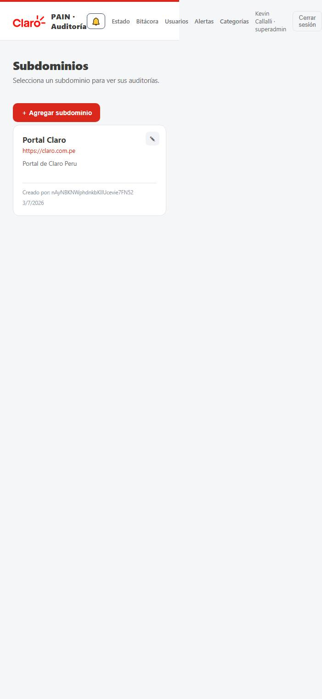
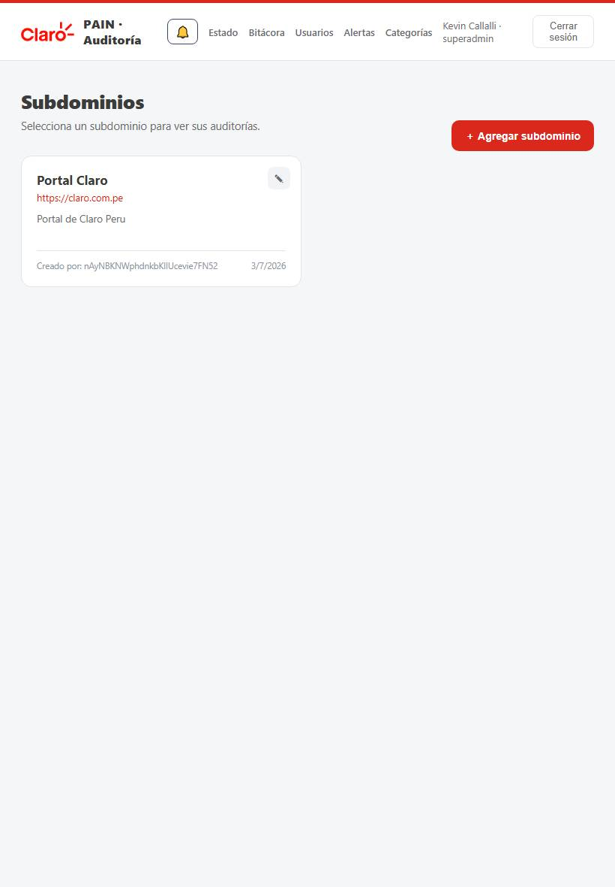
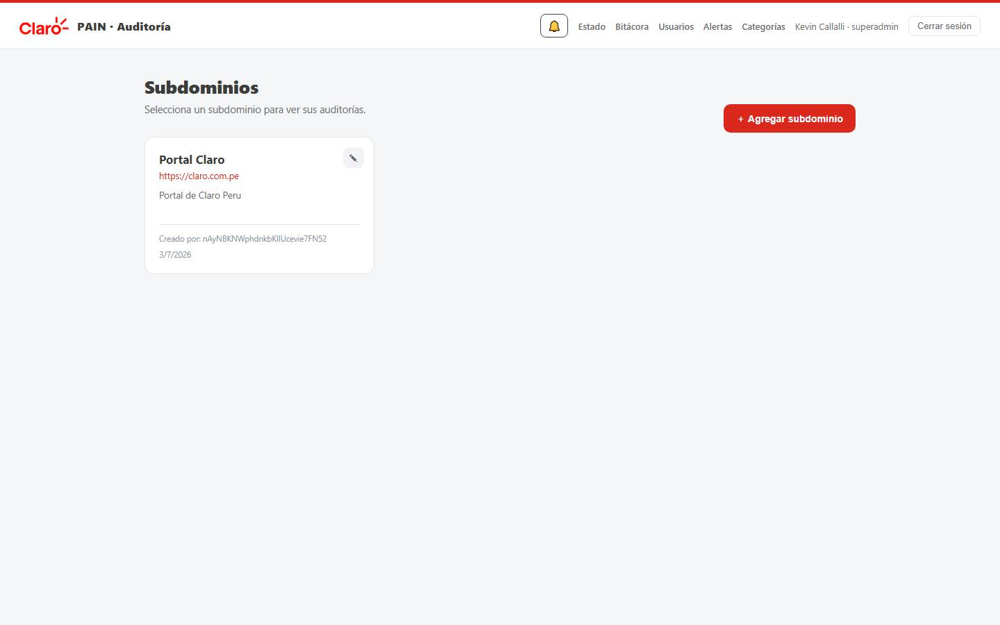
/colecciones.html
| Rol | Dispositivo | Carga | A11y | Resultado |
|---|---|---|---|---|
| usuario | mobile | 7.9 s | 32 | cargó |
| usuario | tablet | 6.3 s | 32 | cargó |
| usuario | desktop | 6.1 s | 32 | cargó |
| admin | mobile | 6.2 s | 32 | cargó |
| admin | tablet | 12.3 s | 32 | cargó |
| admin | desktop | 6.5 s | 32 | cargó |
| superadmin | mobile | 6.0 s | 40 | cargó |
| superadmin | tablet | 6.0 s | 40 | cargó |
| superadmin | desktop | 6.1 s | 40 | cargó |
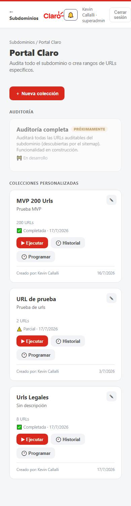
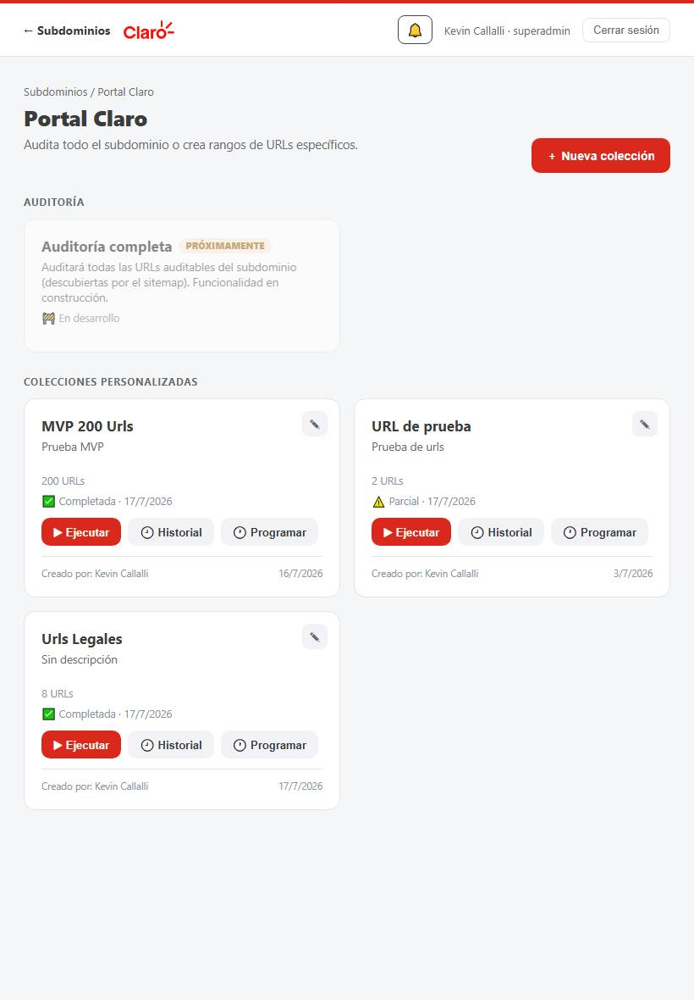
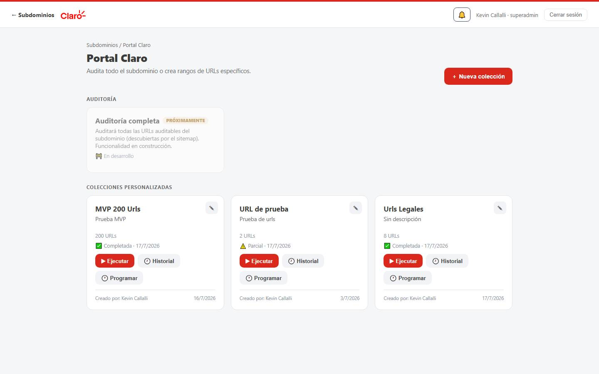
/bitacora.html
| Rol | Dispositivo | Carga | A11y | Resultado |
|---|---|---|---|---|
| usuario | mobile | 4.0 s | 2 | cargó |
| usuario | tablet | 3.9 s | 2 | cargó |
| usuario | desktop | 3.8 s | 2 | cargó |
| admin | mobile | 4.1 s | 3 | cargó |
| admin | tablet | 6.2 s | 2 | cargó |
| admin | desktop | 4.1 s | 2 | cargó |
| superadmin | mobile | 4.1 s | 3 | cargó |
| superadmin | tablet | 4.2 s | 2 | cargó |
| superadmin | desktop | 4.2 s | 2 | cargó |
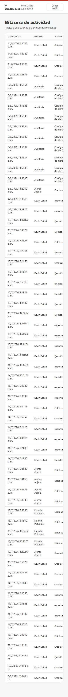
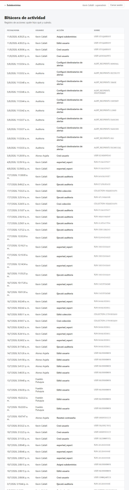
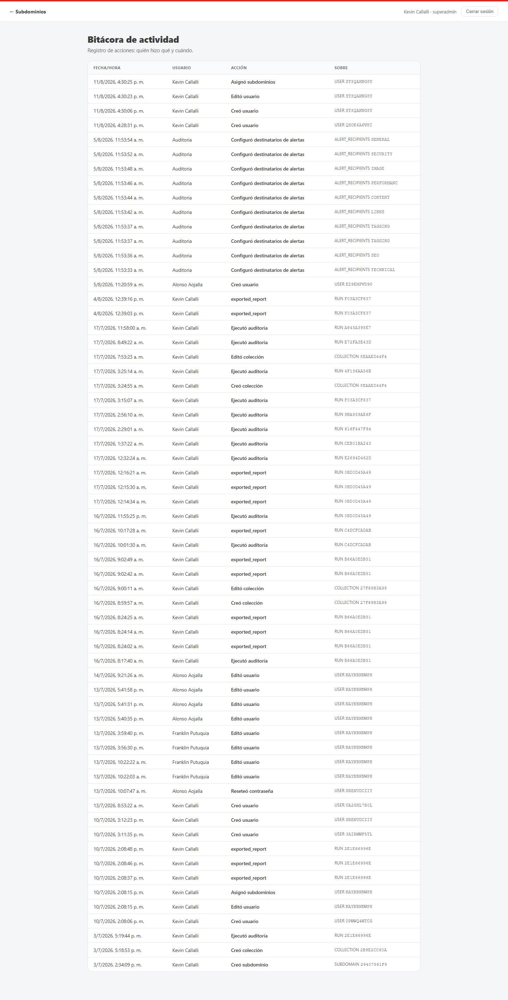
/salud.html
| Rol | Dispositivo | Carga | A11y | Resultado |
|---|---|---|---|---|
| usuario | mobile | 2.9 s | 3 | cargó |
| usuario | tablet | 3.0 s | 3 | cargó |
| usuario | desktop | 3.1 s | 3 | cargó |
| admin | mobile | 33.2 s | 15 | cargó |
| admin | tablet | 30.1 s | 14 | cargó |
| admin | desktop | 28.6 s | 14 | cargó |
| superadmin | mobile | 28.1 s | 15 | cargó |
| superadmin | tablet | 28.3 s | 14 | cargó |
| superadmin | desktop | 29.0 s | 14 | cargó |
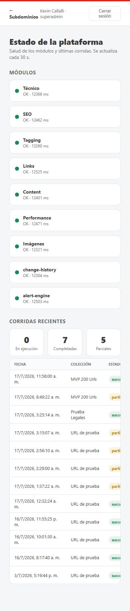
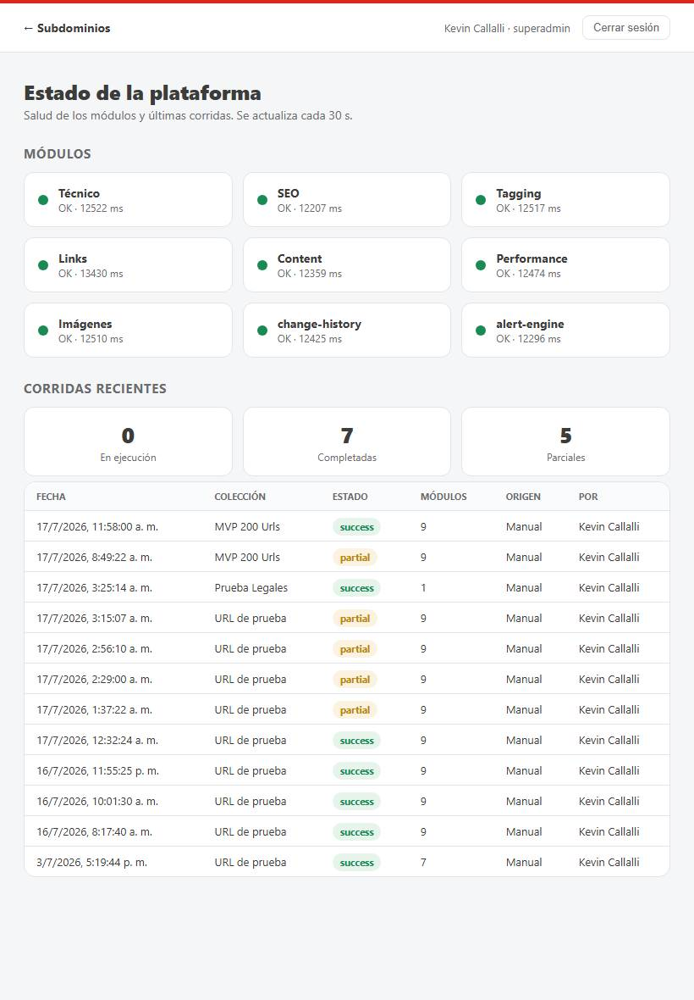
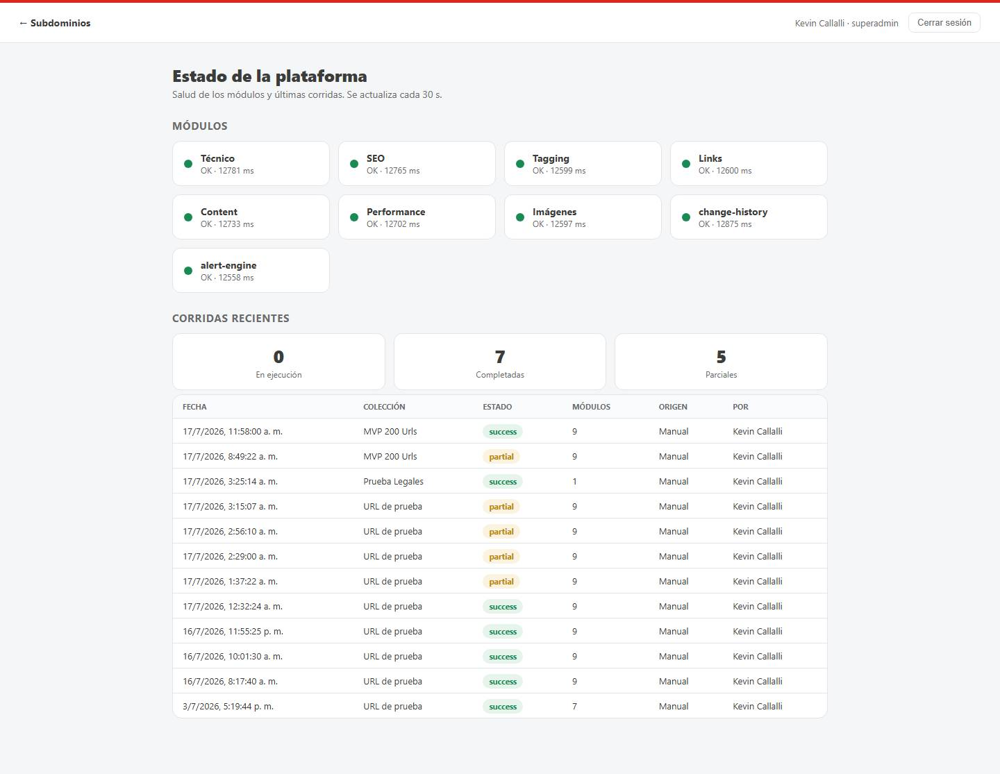
/usuarios.html
| Rol | Dispositivo | Carga | A11y | Resultado |
|---|---|---|---|---|
| usuario | mobile | 3.0 s | 3 | cargó |
| usuario | tablet | 3.0 s | 3 | cargó |
| usuario | desktop | 3.1 s | 3 | cargó |
| admin | mobile | 5.5 s | 3 | cargó |
| admin | tablet | 4.1 s | 3 | cargó |
| admin | desktop | 3.4 s | 3 | cargó |
| superadmin | mobile | 5.3 s | 49 | cargó |
| superadmin | tablet | 5.5 s | 57 | cargó |
| superadmin | desktop | 5.5 s | 57 | cargó |
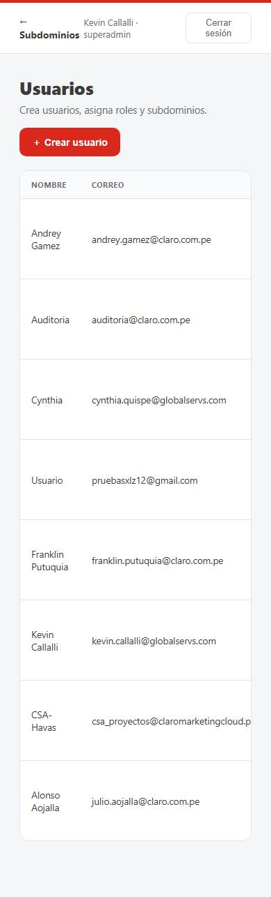
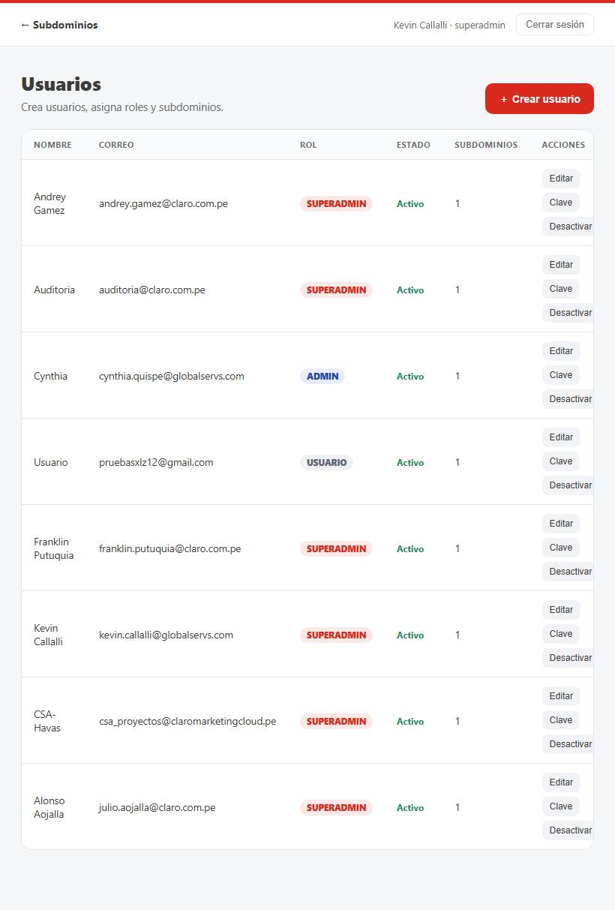
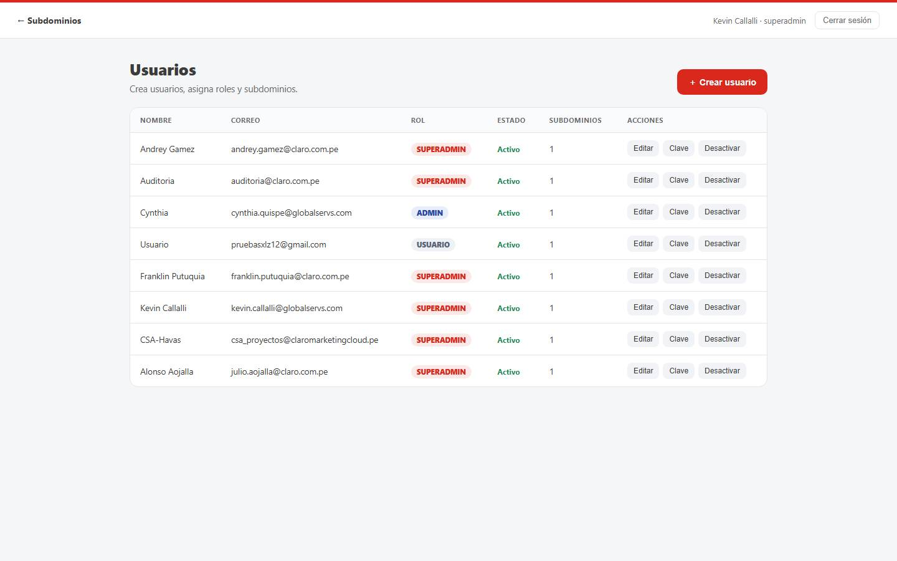
/categorias.html
| Rol | Dispositivo | Carga | A11y | Resultado |
|---|---|---|---|---|
| usuario | mobile | 3.3 s | 3 | cargó |
| usuario | tablet | 3.1 s | 3 | cargó |
| usuario | desktop | 3.3 s | 3 | cargó |
| admin | mobile | 4.8 s | 3 | cargó |
| admin | tablet | 4.5 s | 3 | cargó |
| admin | desktop | 3.9 s | 3 | cargó |
| superadmin | mobile | 3.5 s | 4 | cargó |
| superadmin | tablet | 3.4 s | 4 | cargó |
| superadmin | desktop | 3.3 s | 4 | cargó |
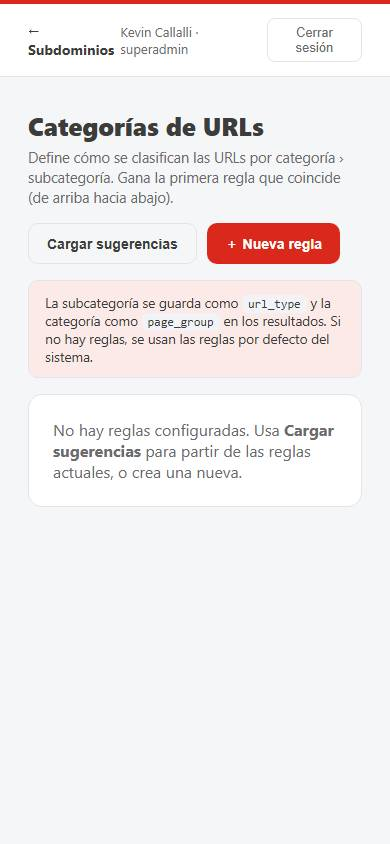
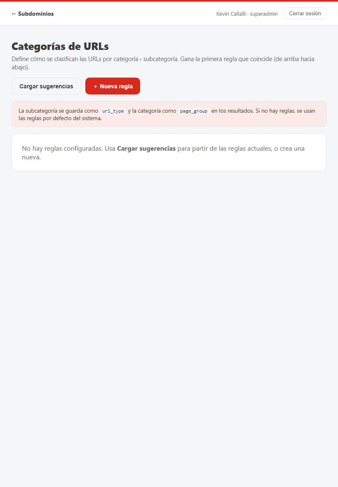
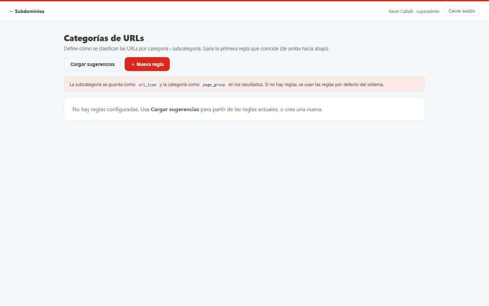
/alertas-config.html
| Rol | Dispositivo | Carga | A11y | Resultado |
|---|---|---|---|---|
| usuario | mobile | 3.3 s | 3 | cargó |
| usuario | tablet | 3.5 s | 3 | cargó |
| usuario | desktop | 3.2 s | 3 | cargó |
| admin | mobile | 5.3 s | 3 | cargó |
| admin | tablet | 4.7 s | 3 | cargó |
| admin | desktop | 2.9 s | 3 | cargó |
| superadmin | mobile | 4.9 s | 4 | cargó |
| superadmin | tablet | 4.0 s | 4 | cargó |
| superadmin | desktop | 4.1 s | 4 | cargó |
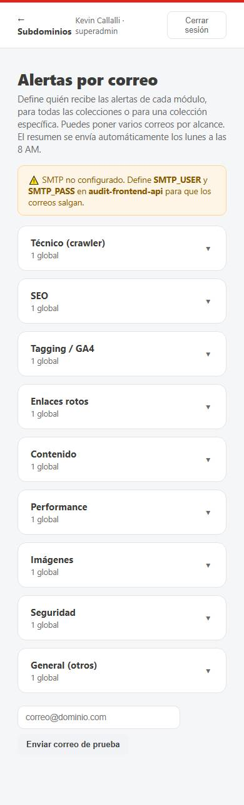
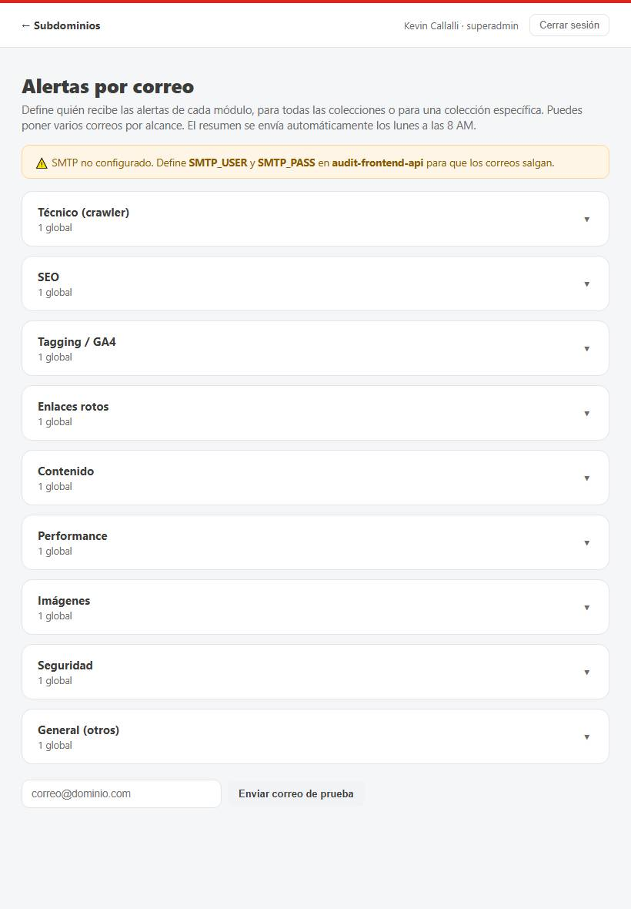
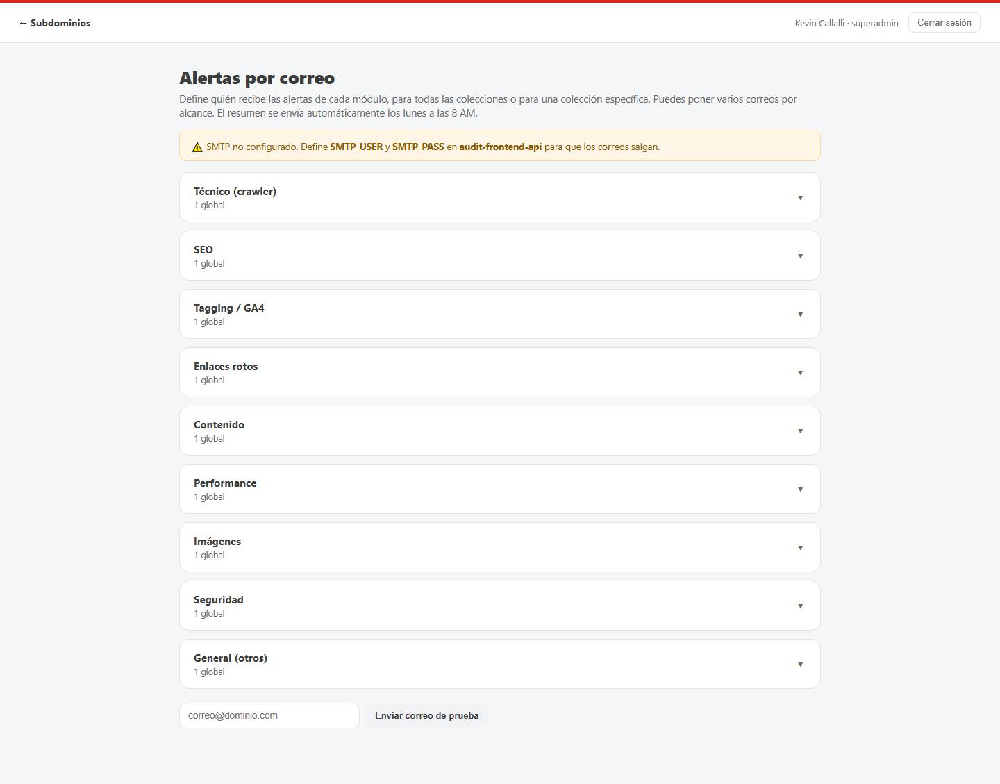
/index.html#overview
| Rol | Dispositivo | Carga | A11y | Resultado |
|---|---|---|---|---|
| usuario | mobile | 16.1 s | 3 | cargó |
| usuario | tablet | 5.8 s | 4 | cargó |
| usuario | desktop | 4.8 s | 4 | cargó |
| admin | mobile | 17.0 s | 3 | cargó |
| admin | tablet | 5.7 s | 4 | cargó |
| admin | desktop | 15.1 s | 4 | cargó |
| superadmin | mobile | 3.0 s | 3 | cargó |
| superadmin | tablet | 3.0 s | 4 | cargó |
| superadmin | desktop | 14.5 s | 4 | cargó |
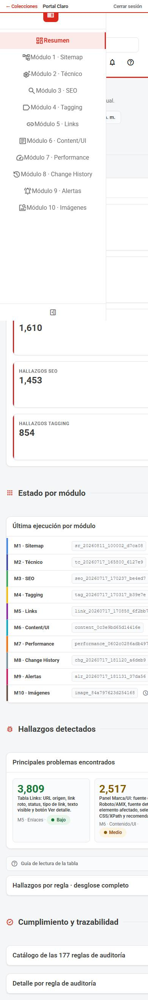
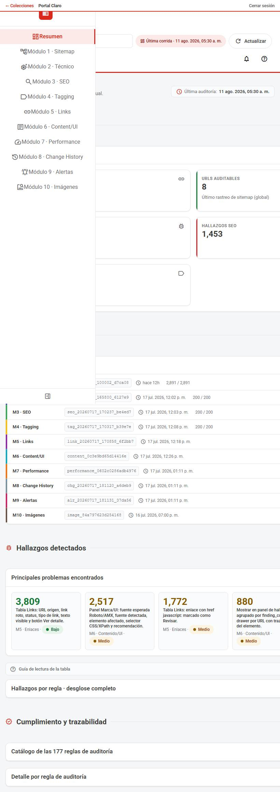
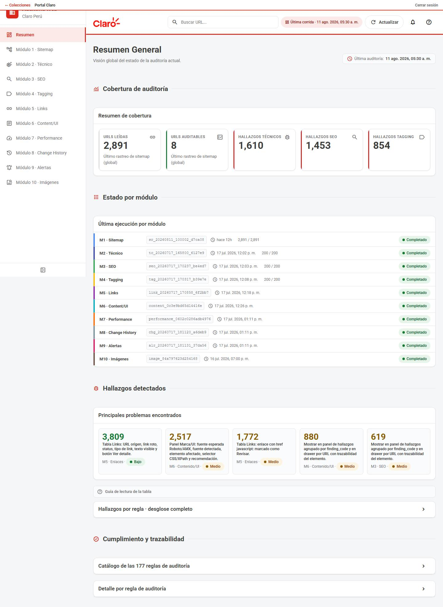
/index.html#sitemap
| Rol | Dispositivo | Carga | A11y | Resultado |
|---|---|---|---|---|
| usuario | mobile | 1.5 s | 4 | cargó |
| usuario | tablet | 1.5 s | 5 | cargó |
| usuario | desktop | 1.5 s | 4 | cargó |
| admin | mobile | 1.5 s | 4 | cargó |
| admin | tablet | 1.5 s | 5 | cargó |
| admin | desktop | 1.5 s | 4 | cargó |
| superadmin | mobile | 1.5 s | 6 | cargó |
| superadmin | tablet | 1.5 s | 5 | cargó |
| superadmin | desktop | 1.5 s | 4 | cargó |
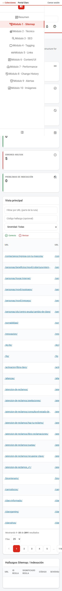
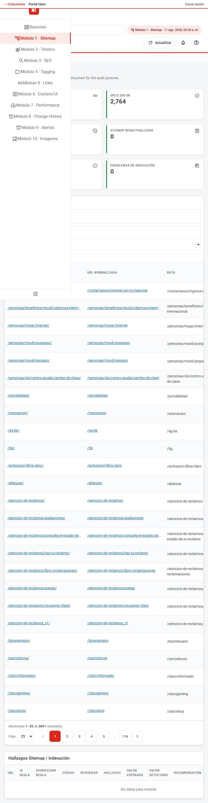
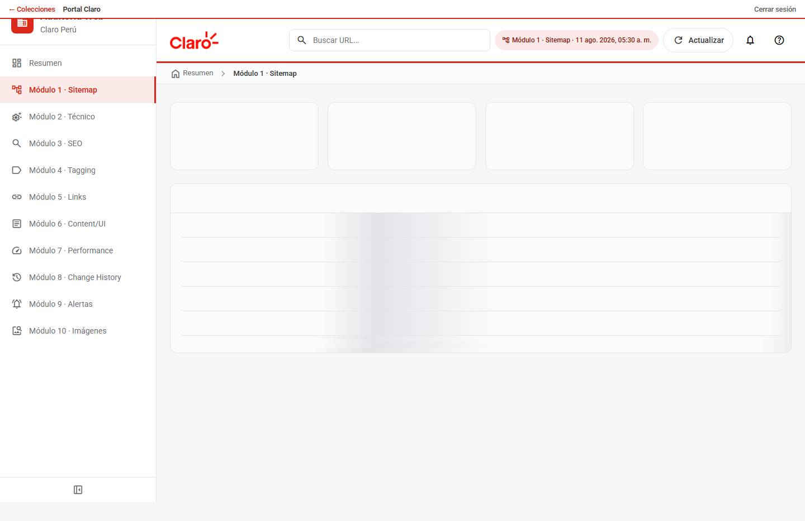
/index.html#technical
| Rol | Dispositivo | Carga | A11y | Resultado |
|---|---|---|---|---|
| usuario | mobile | 1.5 s | 6 | cargó |
| usuario | tablet | 1.5 s | 7 | cargó |
| usuario | desktop | 1.5 s | 4 | cargó |
| admin | mobile | 1.5 s | 4 | cargó |
| admin | tablet | 1.5 s | 7 | cargó |
| admin | desktop | 1.5 s | 6 | cargó |
| superadmin | mobile | 1.5 s | 6 | cargó |
| superadmin | tablet | 1.5 s | 7 | cargó |
| superadmin | desktop | 1.5 s | 6 | cargó |
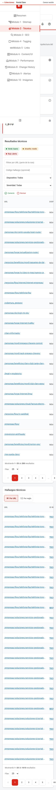
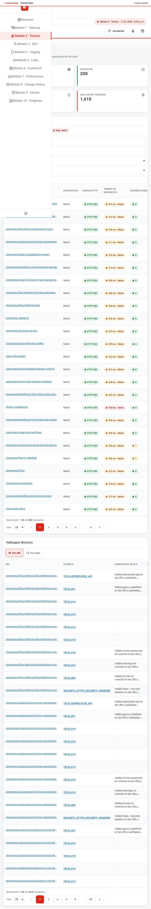
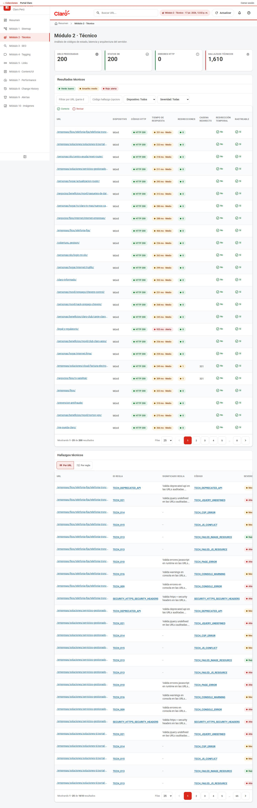
/index.html#seo
| Rol | Dispositivo | Carga | A11y | Resultado |
|---|---|---|---|---|
| usuario | mobile | 1.5 s | 4 | cargó |
| usuario | tablet | 1.7 s | 5 | cargó |
| usuario | desktop | 1.7 s | 7 | cargó |
| admin | mobile | 1.6 s | 4 | cargó |
| admin | tablet | 1.5 s | 5 | cargó |
| admin | desktop | 1.5 s | 4 | cargó |
| superadmin | mobile | 1.5 s | 6 | cargó |
| superadmin | tablet | 1.5 s | 7 | cargó |
| superadmin | desktop | 1.5 s | 4 | cargó |
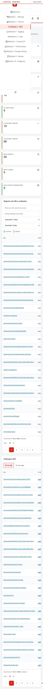
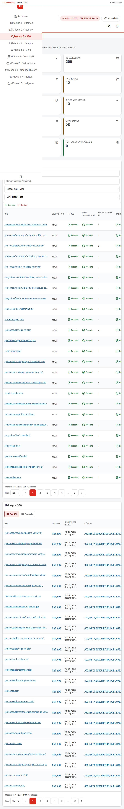
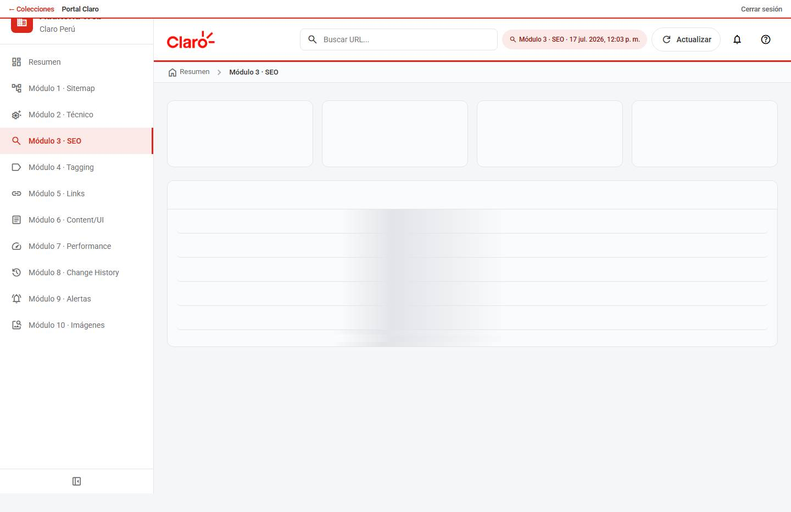
/index.html#tagging
| Rol | Dispositivo | Carga | A11y | Resultado |
|---|---|---|---|---|
| usuario | mobile | 1.5 s | 4 | cargó |
| usuario | tablet | 1.5 s | 7 | cargó |
| usuario | desktop | 1.5 s | 4 | cargó |
| admin | mobile | 1.5 s | 4 | cargó |
| admin | tablet | 1.5 s | 7 | cargó |
| admin | desktop | 1.5 s | 7 | cargó |
| superadmin | mobile | 1.5 s | 6 | cargó |
| superadmin | tablet | 1.5 s | 7 | cargó |
| superadmin | desktop | 1.5 s | 4 | cargó |
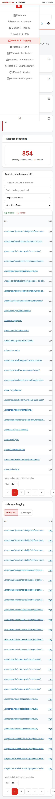
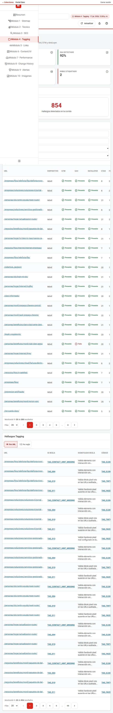
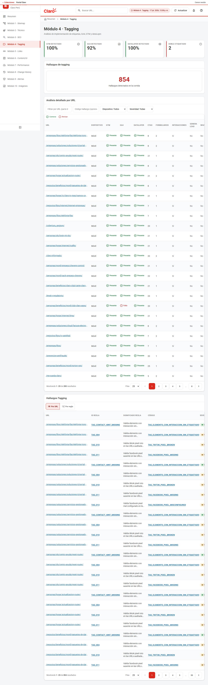
/index.html#links
| Rol | Dispositivo | Carga | A11y | Resultado |
|---|---|---|---|---|
| usuario | mobile | 1.5 s | 4 | cargó |
| usuario | tablet | 1.5 s | 5 | cargó |
| usuario | desktop | 1.6 s | 6 | cargó |
| admin | mobile | 1.5 s | 4 | cargó |
| admin | tablet | 1.5 s | 5 | cargó |
| admin | desktop | 1.5 s | 4 | cargó |
| superadmin | mobile | 1.5 s | 4 | cargó |
| superadmin | tablet | 1.5 s | 8 | cargó |
| superadmin | desktop | 1.5 s | 4 | cargó |
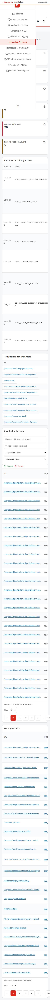
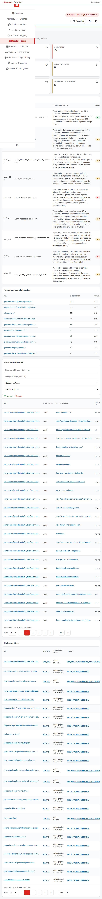
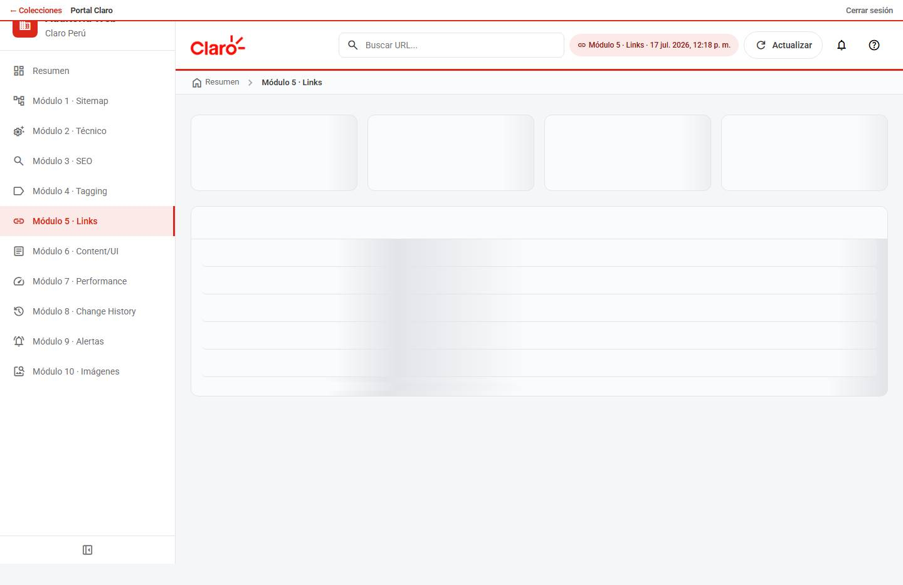
/index.html#content
| Rol | Dispositivo | Carga | A11y | Resultado |
|---|---|---|---|---|
| usuario | mobile | 1.5 s | 7 | cargó |
| usuario | tablet | 1.5 s | 7 | cargó |
| usuario | desktop | 1.5 s | 4 | cargó |
| admin | mobile | 1.5 s | 4 | cargó |
| admin | tablet | 1.5 s | 8 | cargó |
| admin | desktop | 1.5 s | 4 | cargó |
| superadmin | mobile | 1.5 s | 6 | cargó |
| superadmin | tablet | 1.5 s | 7 | cargó |
| superadmin | desktop | 1.5 s | 6 | cargó |


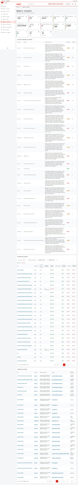
/index.html#performance
| Rol | Dispositivo | Carga | A11y | Resultado |
|---|---|---|---|---|
| usuario | mobile | 1.5 s | 4 | cargó |
| usuario | tablet | 1.5 s | 5 | cargó |
| usuario | desktop | 1.5 s | 4 | cargó |
| admin | mobile | 1.5 s | 4 | cargó |
| admin | tablet | 1.5 s | 5 | cargó |
| admin | desktop | 1.5 s | 4 | cargó |
| superadmin | mobile | 1.5 s | 4 | cargó |
| superadmin | tablet | 1.5 s | 4 | cargó |
| superadmin | desktop | 1.5 s | 4 | cargó |
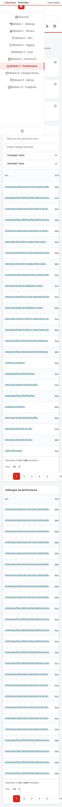
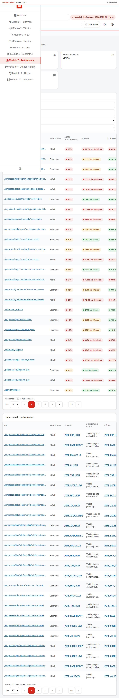
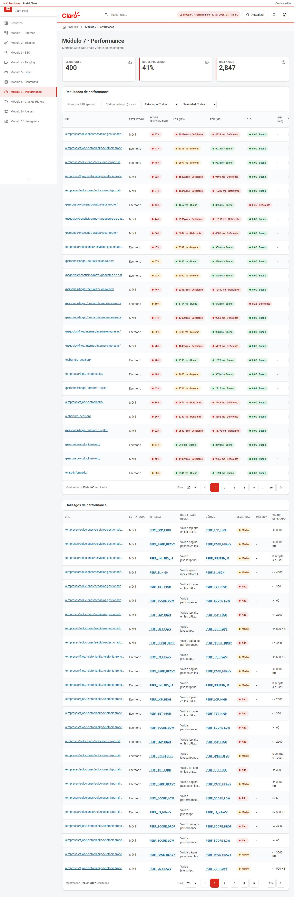
/index.html#change-history
| Rol | Dispositivo | Carga | A11y | Resultado |
|---|---|---|---|---|
| usuario | mobile | 1.5 s | 4 | cargó |
| usuario | tablet | 1.5 s | 5 | cargó |
| usuario | desktop | 1.6 s | 4 | cargó |
| admin | mobile | 1.5 s | 4 | cargó |
| admin | tablet | 1.5 s | 5 | cargó |
| admin | desktop | 1.5 s | 4 | cargó |
| superadmin | mobile | 1.5 s | 4 | cargó |
| superadmin | tablet | 1.5 s | 5 | cargó |
| superadmin | desktop | 1.5 s | 4 | cargó |
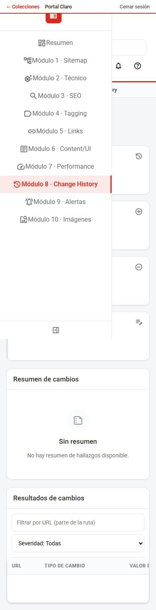
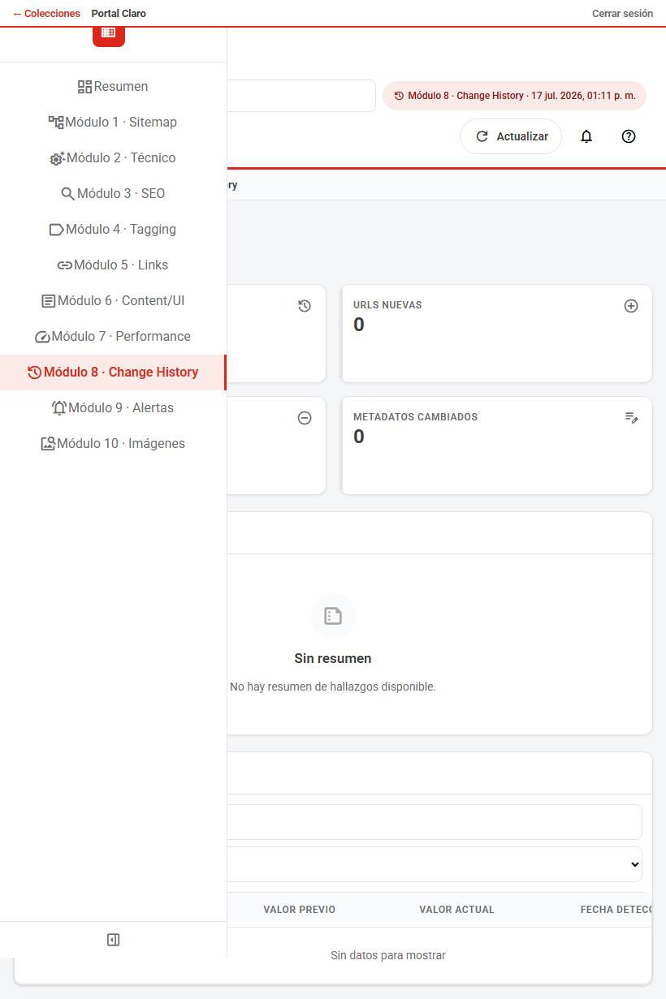
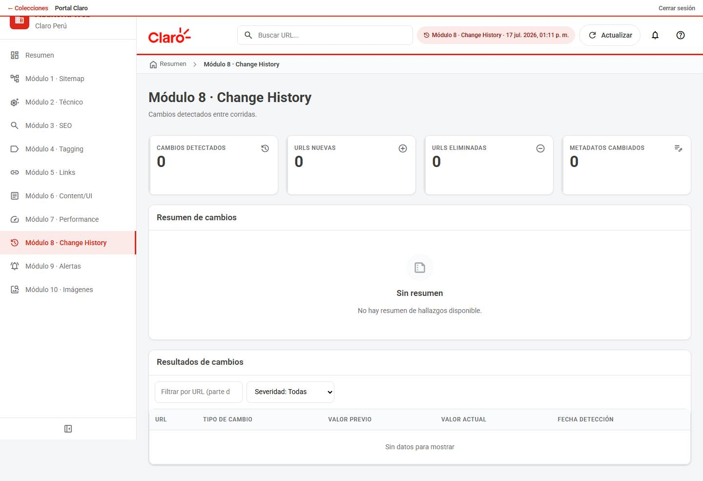
/index.html#alerts
| Rol | Dispositivo | Carga | A11y | Resultado |
|---|---|---|---|---|
| usuario | mobile | 1.5 s | 4 | cargó |
| usuario | tablet | 1.5 s | 5 | cargó |
| usuario | desktop | 1.5 s | 4 | cargó |
| admin | mobile | 1.7 s | 4 | cargó |
| admin | tablet | 1.5 s | 5 | cargó |
| admin | desktop | 1.5 s | 4 | cargó |
| superadmin | mobile | 1.5 s | 4 | cargó |
| superadmin | tablet | 1.5 s | 5 | cargó |
| superadmin | desktop | 1.5 s | 4 | cargó |
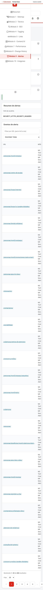
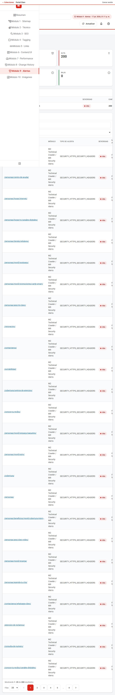
/index.html#image-audit
| Rol | Dispositivo | Carga | A11y | Resultado |
|---|---|---|---|---|
| usuario | mobile | 1.5 s | 4 | cargó |
| usuario | tablet | 1.6 s | 5 | cargó |
| usuario | desktop | 1.5 s | 4 | cargó |
| admin | mobile | 1.5 s | 4 | cargó |
| admin | tablet | 1.5 s | 5 | cargó |
| admin | desktop | 1.5 s | 4 | cargó |
| superadmin | mobile | 1.5 s | 4 | cargó |
| superadmin | tablet | 1.5 s | 9 | cargó |
| superadmin | desktop | 1.5 s | 4 | cargó |
Seis veces, a lo largo de la auditoría, una medición nuestra iba a producir un resultado equivocado. Se detectaron antes de publicarlas y se documentan aquí porque un instrumento sin declarar sus fallos no es un instrumento auditable.
| Qué medimos mal | Efecto | Cómo se corrigió |
|---|---|---|
| Las 11 vistas del visor, recorridas sin contexto | 99 recorridos sobre pantallas vacías; los controles bajo 44 px salían 43 en lugar de 2,934 | Sembrar la corrida en sessionStorage y exigir filas de tabla renderizadas antes de medir |
| Cobertura del catálogo, sin la tabla de equivalencias | 53 reglas «sin evidencia» en lugar de 32; 21 funcionaban bajo otro nombre | Leer FINDING_CODE_ALIASES del código del BFF y aplicarla en ambos sentidos |
| Cobertura del catálogo, contando el propio catálogo | «100 % implementado»: la copia del CSV en el BFF contenía los 177 códigos | Excluir los .csv de la búsqueda de código |
| Pantalla de salud de 28 segundos | Se iba a reportar como el defecto más grave | Medir la causa: 12 s de espera por credenciales fuera de Google Cloud, propio de nuestro entorno |
| Módulo de imágenes «sin cuadrar» | Falsa contradicción de datos | El resumen lo nombra image-audit y el detalle image: era nuestra comparación |
| Señal de contenido demasiado permisiva | Aceptaba tarjetas de la carcasa vacía como si fueran datos | Restringirla a filas de tabla |
Para que nadie lea de más en este informe:
Reproducible.
node fase0-baseline.mjs && node test-autorizacion.mjs && node fase1-api.mjs && node fase2-reglas.mjs && node fase3a-escrituras.mjs && node fase3b-flujos.mjs && node fase4a-visor-3d.mjs && node consistencia-datos.mjs && python calidad-codigo.py && python fase5-diccionario.py && node build-informe.mjs.
Evidencia cruda en out/.